<!DOCTYPE html>
<html lang="zh-CN">
<head>
  <meta charset="UTF-8">
  <meta name="viewport" content="width=device-width, initial-scale=1.0, viewport-fit=cover">
  <meta name="description" content="《星弧航记》（Arcs）官方英文规则书全文中文翻译：卡牌驱动 · 太空歌剧 · 非对称目标，24 页整本译出，含设置、流程、计分与附录，附官方原文 PDF 链接。">
  <title data-zh="星弧航记 (Arcs) · 规则 — 桌游规则书" data-en="Arcs · Rules — Board Game Rules">星弧航记 (Arcs) · 规则 — 桌游规则书</title>
  <link rel="icon" href="data:image/svg+xml,<svg xmlns='http://www.w3.org/2000/svg' viewBox='0 0 100 100'><text y='0.9em' font-size='90'>🌟</text></svg>">
  <link rel="stylesheet" href="../assets/css/style.css">
  <link rel="canonical" href="https://rule.zhibinai.cn/games/arcs.html">
  <meta property="og:site_name" content="桌游规则书">
  <meta property="og:locale" content="zh_CN">
  <meta property="og:type" content="article">
  <meta property="og:title" content="星弧航记 (Arcs) · 规则 — 桌游规则书">
  <meta property="og:description" content="《星弧航记》（Arcs）官方英文规则书全文中文翻译：卡牌驱动 · 太空歌剧 · 非对称目标，24 页整本译出，含设置、流程、计分与附录，附官方原文 PDF 链接。">
  <meta property="og:url" content="https://rule.zhibinai.cn/games/arcs.html">
  <meta property="og:image" content="https://rule.zhibinai.cn/assets/img/arcs/01.webp">
  <meta name="twitter:card" content="summary_large_image">
  <meta name="twitter:title" content="星弧航记 (Arcs) · 规则 — 桌游规则书">
  <meta name="twitter:description" content="《星弧航记》（Arcs）官方英文规则书全文中文翻译：卡牌驱动 · 太空歌剧 · 非对称目标，24 页整本译出，含设置、流程、计分与附录，附官方原文 PDF 链接。">
  <script type="application/ld+json">{
 "@context": "https://schema.org",
 "@graph": [
  {
   "@type": "WebSite",
   "@id": "https://rule.zhibinai.cn/#website",
   "name": "桌游规则书",
   "url": "https://rule.zhibinai.cn/",
   "inLanguage": "zh-CN",
   "description": "免费中文桌游规则书查询站：热门桌游完整中文规则全文 + Board Game Arena 全量官方规则中文版。"
  },
  {
   "@type": "WebPage",
   "@id": "https://rule.zhibinai.cn/games/arcs.html",
   "url": "https://rule.zhibinai.cn/games/arcs.html",
   "name": "星弧航记 (Arcs) · 规则 — 桌游规则书",
   "description": "《星弧航记》（Arcs）官方英文规则书全文中文翻译：卡牌驱动 · 太空歌剧 · 非对称目标，24 页整本译出，含设置、流程、计分与附录，附官方原文 PDF 链接。",
   "isPartOf": {
    "@id": "https://rule.zhibinai.cn/#website"
   },
   "inLanguage": "zh-CN",
   "dateModified": "2026-11-09",
   "primaryImageOfPage": {
    "@type": "ImageObject",
    "url": "https://rule.zhibinai.cn/assets/img/arcs/01.webp"
   }
  },
  {
   "@type": "BreadcrumbList",
   "itemListElement": [
    {
     "@type": "ListItem",
     "position": 1,
     "name": "首页",
     "item": "https://rule.zhibinai.cn/"
    },
    {
     "@type": "ListItem",
     "position": 2,
     "name": "星弧航记 (Arcs)",
     "item": "https://rule.zhibinai.cn/games/arcs.html"
    }
   ]
  }
 ]
}</script>
  <!-- seo-wired -->
</head>
<body data-theme="arcs" data-game-key="arcs">

  <div class="progress-bar" aria-hidden="true"></div>

  <header class="topbar">
    <button class="menu-btn" aria-label="打开目录" aria-expanded="false" data-i18n-aria="openToc">☰</button>
    <a class="brand" href="../index.html" data-i18n="brand">🎲 桌游规则书</a>
    <span class="topbar-title" data-zh="星弧航记" data-en="Arcs">星弧航记</span>
  </header>

  <div class="layout">
    <aside class="sidebar" id="sidebar">
      <nav class="toc" aria-label="本页目录" data-i18n-aria="onThisPage">
        <div class="toc-title" data-i18n="onThisPage">本页目录</div>
        <ul id="toc-list"></ul>
      </nav>
      <nav aria-label="全部游戏" data-i18n-aria="allGames">
        <div class="toc-title" data-i18n="allGames">全部游戏</div>
        <ul>
          <li><a href="../index.html" data-i18n="home">🏠 返回首页</a></li>
          <li><a href="7-wonders.html" data-zh="🏛️ 七大奇迹" data-en="🏛️ 7 Wonders">🏛️ 七大奇迹</a></li>
          <li><a href="brass-birmingham.html" data-zh="🏭 工业革命：伯明翰" data-en="🏭 Brass: Birmingham">🏭 工业革命：伯明翰</a></li>
          <li><a href="vale-of-eternity.html" data-zh="✨ 永恒之谷" data-en="✨ The Vale of Eternity">✨ 永恒之谷</a></li>
          <li><a href="wingspan.html" data-zh="🦜 展翅翱翔" data-en="🦜 Wingspan">🦜 展翅翱翔</a></li>
          <li><a href="pokemon-grove.html" data-zh="🌳 宝可梦林地探索" data-en="🌳 Pokemon Grove">🌳 宝可梦林地探索</a></li>
          <li><a href="puerto-rico.html" data-zh="⛵ 波多黎各" data-en="⛵ Puerto Rico">⛵ 波多黎各</a></li>
          <li><a href="barcelona.html" data-zh="🌸 巴塞罗那" data-en="🌸 Barcelona">🌸 巴塞罗那</a></li>
          <li><a href="dune-imperium.html" data-zh="🏜️ 沙丘：帝国" data-en="🏜️ Dune: Imperium">🏜️ 沙丘：帝国</a></li>
          <li><a href="dune-imperium-uprising.html" data-zh="🪱 沙丘：帝国起义" data-en="🪱 Dune: Imperium – Uprising">🪱 沙丘：帝国起义</a></li>
          <li><a href="ascension.html" data-zh="🃏 创升纪元" data-en="🃏 Ascension">🃏 创升纪元</a></li>
          <li><a href="tulip-bubble.html" data-zh="🌷 郁金香泡沫" data-en="🌷 Tulip Bubble">🌷 郁金香泡沫</a></li>
          <li><a href="trajan.html" data-zh="🦅 图拉真" data-en="🦅 Trajan">🦅 图拉真</a></li>
          <li><a href="galileo-galilei.html" data-zh="🔭 伽利略：伽利莱" data-en="🔭 Galileo Galilei">🔭 伽利略：伽利莱</a></li>
          <li><a href="orloj.html" data-zh="🕰️ 奥洛伊：布拉格天文钟" data-en="🕰️ Orloj: The Prague Astronomical Clock">🕰️ 奥洛伊：布拉格天文钟</a></li>
          <li><a href="food-chain-magnate.html" data-zh="🍔 快餐连锁大亨" data-en="🍔 Food Chain Magnate">🍔 快餐连锁大亨</a></li>
          <li><a href="clank-catacombs.html" data-zh="🐉 CLANK! 地下墓穴" data-en="🐉 Clank!: Catacombs">🐉 CLANK! 地下墓穴</a></li>
          <li><a href="clank-catacombs-underworld.html" data-zh="💀 CLANK! 地下墓穴:地下世界" data-en="💀 Clank! Catacombs: Underworld">💀 CLANK! 地下墓穴:地下世界</a></li>
          <li><a href="clank-adventuring-party.html" data-zh="🗡️ CLANK! 冒险队" data-en="🗡️ Clank!: Adventuring Party">🗡️ CLANK! 冒险队</a></li>
          <li><a href="ark-nova-marine-worlds.html" data-zh="🐙 方舟动物园：海洋世界" data-en="🐙 Ark Nova: Marine Worlds">🐙 方舟动物园：海洋世界</a></li>
          <li><a href="arnak-expedition-leaders.html" data-zh="🗿 阿纳克遗迹:探险队长" data-en="🗿 Lost Ruins of Arnak: Expedition Leaders">🗿 阿纳克遗迹:探险队长</a></li>
          <li><a href="speakeasy.html" data-zh="🎷 地下酒吧" data-en="🎷 Speakeasy">🎷 地下酒吧</a></li>
          <li><a href="power-grid.html" data-zh="⚡ 电力公司" data-en="⚡ Power Grid">⚡ 电力公司</a></li>
          <li><a href="seti.html" data-zh="🛰️ SETI：寻找外星人" data-en="🛰️ SETI: Search for Extraterrestrial Intelligence">🛰️ SETI：寻找外星人</a></li>
          <li><a href="seti-space-agencies.html" data-zh="🚀 地外文明：太空机构" data-en="🚀 SETI: Space Agencies">🚀 地外文明：太空机构</a></li>
          <li><a href="white-castle.html" data-zh="🏯 姬路城" data-en="🏯 The White Castle">🏯 姬路城</a></li>
          <li><a href="white-castle-matcha.html" data-zh="🍵 姬路城：茶道" data-en="🍵 The White Castle: Matcha">🍵 姬路城：茶道</a></li>
          <li><a href="endeavor-deep-sea.html" data-zh="🌊 奋进号：深海" data-en="🌊 Endeavor: Deep Sea">🌊 奋进号：深海</a></li>
          <li><a href="druids-of-edora.html" data-zh="🌲 埃多拉的德鲁伊" data-en="🌲 The Druids of Edora">🌲 埃多拉的德鲁伊</a></li>
          <li><a href="grand-austria-hotel.html" data-zh="🏨 奥地利大饭店" data-en="🏨 Grand Austria Hotel">🏨 奥地利大饭店</a></li>
          <li><a href="the-message.html" data-zh="🕵️ 风声再临" data-en="🕵️ The Message">🕵️ 风声再临</a></li>
          <li><a href="gwt-new-zealand.html" data-zh="🐑 大西部开拓者:新西兰" data-en="🐑 Great Western Trail: New Zealand">🐑 大西部开拓者:新西兰</a></li>
          <li><a href="fields-of-arle.html" data-zh="🌾 阿勒農場" data-en="🌾 Fields of Arle">🌾 阿勒農場</a></li>
          <li><a href="gaiaproject-lost-fleet.html" data-zh="🌌 盖亚计划:失落的舰队" data-en="🌌 Gaia Project: The Lost Fleet">🌌 盖亚计划:失落的舰队</a></li>
          <li><a href="spirit-island.html" data-zh="🏝️ 灵迹岛" data-en="🏝️ Spirit Island">🏝️ 灵迹岛</a></li>
          <li><a href="harmonies.html" data-zh="🦁 自然和弦" data-en="🦁 Harmonies">🦁 自然和弦</a></li>
          <li><a href="agricola-revised.html" data-zh="🌾 农场主（修订版）" data-en="🌾 Agricola (Revised Edition)">🌾 农场主（修订版）</a></li>
          <li><a href="final-girl.html" data-zh="🎬 最终女孩" data-en="🎬 Final Girl">🎬 最终女孩</a></li>
          <li><a href="le-havre.html" data-zh="⚓ 勒阿弗尔" data-en="⚓ Le Havre">⚓ 勒阿弗尔</a></li>
          <li><a href="lotr-duel-for-middle-earth.html" data-zh="🌋 魔戒：中土对决" data-en="🌋 The Lord of the Rings: Duel for Middle-earth">🌋 魔戒：中土对决</a></li>
          <li><a href="marvel-champions.html" data-zh="🦸 漫威群英传：卡牌版" data-en="🦸 Marvel Champions: The Card Game">🦸 漫威群英传：卡牌版</a></li>
          <li><a href="nemesis.html" data-zh="👽 复仇女神号" data-en="👽 Nemesis">👽 复仇女神号</a></li>
          <li><a href="pandemic-legacy-season-0.html" data-zh="🕵️ 瘟疫危机：传承·第0季" data-en="🕵️ Pandemic Legacy: Season 0">🕵️ 瘟疫危机：传承·第0季</a></li>
          <li><a href="pandemic-legacy-season-1.html" data-zh="🦠 瘟疫危机：传承·第一季" data-en="🦠 Pandemic Legacy: Season 1">🦠 瘟疫危机：传承·第一季</a></li>
          <li><a href="android-netrunner.html" data-zh="🤖 安卓：潜袭" data-en="🤖 Android: Netrunner">🤖 安卓：潜袭</a></li>
          <li><a href="arkham-horror-lcg.html" data-zh="🔍 诡镇奇谈：卡牌版" data-en="🔍 Arkham Horror: The Card Game">🔍 诡镇奇谈：卡牌版</a></li>
          <li><a href="bomb-busters.html" data-zh="💣 拆弹小队" data-en="💣 Bomb Busters">💣 拆弹小队</a></li>
          <li><a href="cascadia.html" data-zh="🌲 卡斯卡迪亚" data-en="🌲 Cascadia">🌲 卡斯卡迪亚</a></li>
          <li><a href="everdell.html" data-zh="🌰 仙境幽谷" data-en="🌰 Everdell">🌰 仙境幽谷</a></li>
          <li><a href="five-tribes.html" data-zh="🏜️ 五大部落" data-en="🏜️ Five Tribes: The Djinns of Naqala">🏜️ 五大部落</a></li>
          <li><a href="kanban-ev.html" data-zh="🚗 看板：电动汽车版" data-en="🚗 Kanban EV">🚗 看板：电动汽车版</a></li>
          <li><a href="lisboa.html" data-zh="🏛️ 里斯本" data-en="🏛️ Lisboa">🏛️ 里斯本</a></li>
          <li><a href="mage-knight.html" data-zh="🧙 魔骑士" data-en="🧙 Mage Knight Board Game">🧙 魔骑士</a></li>
          <li><a href="mansions-of-madness-2e.html" data-zh="🏚️ 疯狂诡宅（第二版）" data-en="🏚️ Mansions of Madness: Second Edition">🏚️ 疯狂诡宅（第二版）</a></li>
          <li><a href="paladins-of-the-west-kingdom.html" data-zh="🛡️ 西王国的圣骑士" data-en="🛡️ Paladins of the West Kingdom">🛡️ 西王国的圣骑士</a></li>
          <li><a href="pandemic-legacy-season-2.html" data-zh="🧭 瘟疫危机：传承·第二季" data-en="🧭 Pandemic Legacy: Season 2">🧭 瘟疫危机：传承·第二季</a></li>
          <li><a href="quacks.html" data-zh="🧪 奎德林堡的江湖郎中" data-en="🧪 Quacks">🧪 奎德林堡的江湖郎中</a></li>
          <li><a href="root.html" data-zh="🦊 茂林源记" data-en="🦊 Root">🦊 茂林源记</a></li>
          <li><a href="slay-the-spire-bg.html" data-zh="🗡️ 杀戮尖塔：版图游戏" data-en="🗡️ Slay the Spire: The Board Game">🗡️ 杀戮尖塔：版图游戏</a></li>
          <li><a href="star-wars-imperial-assault.html" data-zh="🎯 星球大战：帝国突击" data-en="🎯 Star Wars: Imperial Assault">🎯 星球大战：帝国突击</a></li>
          <li><a href="star-wars-rebellion.html" data-zh="🚀 星球大战：叛乱" data-en="🚀 Star Wars: Rebellion">🚀 星球大战：叛乱</a></li>
          <li><a href="the-crew-planet-nine.html" data-zh="🪐 星际探险队：第九行星" data-en="🪐 The Crew: The Quest for Planet Nine">🪐 星际探险队：第九行星</a></li>
          <li><a href="the-gallerist.html" data-zh="🖼️ 画商" data-en="🖼️ The Gallerist">🖼️ 画商</a></li>
          <li><a href="ticket-to-ride-legacy.html" data-zh="🚂 车票之旅：传承·西部传奇" data-en="🚂 Ticket to Ride Legacy: Legends of the West">🚂 车票之旅：传承·西部传奇</a></li>
          <li><a href="tzolkin.html" data-zh="🌀 卓尔金历：玛雅历法" data-en="🌀 Tzolk'in: The Mayan Calendar">🌀 卓尔金历：玛雅历法</a></li>
          <li><a href="underwater-cities.html" data-zh="🌊 水下城市" data-en="🌊 Underwater Cities">🌊 水下城市</a></li>
          <li><a href="blood-on-the-clocktower.html" data-zh="🔔 血染钟楼" data-en="🔔 Blood on the Clocktower">🔔 血染钟楼</a></li>
          <li><a href="oathsworn.html" data-zh="🐺 守誓者：深入密林" data-en="🐺 Oathsworn: Into the Deepwood">🐺 守誓者：深入密林</a></li>
          <li><a href="cthulhu-death-may-die.html" data-zh="🐙 克苏鲁：死亡可能会死" data-en="🐙 Cthulhu: Death May Die">🐙 克苏鲁：死亡可能会死</a></li>
          <li><a href="too-many-bones.html" data-zh="💀 太多骨头" data-en="💀 Too Many Bones">💀 太多骨头</a></li>
          <li><a href="crokinole.html" data-zh="🎯 弹指棋" data-en="🎯 Crokinole">🎯 弹指棋</a></li>
          <li><a href="wingspan-asia.html" data-zh="🐦 展翅翱翔：亚洲" data-en="🐦 Wingspan Asia">🐦 展翅翱翔：亚洲</a></li>
          <li><a href="viticulture.html" data-zh="🍇 葡萄酒庄园（核心版）" data-en="🍇 Viticulture Essential Edition">🍇 葡萄酒庄园（核心版）</a></li>
          <li><a href="twilight-struggle.html" data-zh="🌍 冷战热斗" data-en="🌍 Twilight Struggle">🌍 冷战热斗</a></li>
          <li><a href="on-mars.html" data-zh="🔴 火星之上" data-en="🔴 On Mars">🔴 火星之上</a></li>
          <li><a href="war-of-the-ring.html" data-zh="💍 魔戒圣战" data-en="💍 War of the Ring: Second Edition">💍 魔戒圣战</a></li>
          <li><a href="mechs-vs-minions.html" data-zh="⚙️ 机甲大战小兵" data-en="⚙️ Mechs vs. Minions">⚙️ 机甲大战小兵</a></li>
          <li><a href="clank-legacy.html" data-zh="🐉 咔嚓！传承：收购公司" data-en="🐉 Clank! Legacy: Acquisitions Incorporated">🐉 咔嚓！传承：收购公司</a></li>
          <li><a href="eclipse-second-dawn.html" data-zh="🌌 星蚀：银河二次黎明" data-en="🌌 Eclipse: Second Dawn for the Galaxy">🌌 星蚀：银河二次黎明</a></li>
          <li><a href="voidfall.html" data-zh="🌑 虚空坠落" data-en="🌑 Voidfall">🌑 虚空坠落</a></li>
          <li><a href="sleeping-gods.html" data-zh="🛶 沉睡之神" data-en="🛶 Sleeping Gods">🛶 沉睡之神</a></li>
          <li><a href="gloomhaven.html" data-zh="⚔️ 幽港迷城" data-en="⚔️ Gloomhaven">⚔️ 幽港迷城</a></li>
          <li><a href="gloomhaven-jaws-of-the-lion.html" data-zh="🦁 幽港迷城：雄狮之颚" data-en="🦁 Gloomhaven: Jaws of the Lion">🦁 幽港迷城：雄狮之颚</a></li>
          <li><a href="frosthaven.html" data-zh="❄️ 寒霜迷城" data-en="❄️ Frosthaven">❄️ 寒霜迷城</a></li>
          <li><a href="aeons-end-war-eternal.html" data-zh="💠 末日决战：永恒战争" data-en="💠 Aeon's End: War Eternal">💠 末日决战：永恒战争</a></li>
          <li><a href="battlestar-galactica.html" data-zh="🚀 太空堡垒卡拉狄加" data-en="🚀 Battlestar Galactica: The Board Game">🚀 太空堡垒卡拉狄加</a></li>
          <li><a href="codenames.html" data-zh="🕵️ 行动代号" data-en="🕵️ Codenames">🕵️ 行动代号</a></li>
          <li><a href="concordia-venus.html" data-zh="🕊️ 康考迪亚：维纳斯" data-en="🕊️ Concordia Venus">🕊️ 康考迪亚：维纳斯</a></li>
          <li><a href="dominant-species.html" data-zh="🦣 优势物种" data-en="🦣 Dominant Species">🦣 优势物种</a></li>
          <li><a href="iberia.html" data-zh="❓ 伊比利亚（待查词条）" data-en="❓ Iberia">❓ 伊比利亚（待查词条）</a></li>
          <li><a href="istanbul.html" data-zh="🏺 伊斯坦布尔" data-en="🏺 Istanbul">🏺 伊斯坦布尔</a></li>
          <li><a href="lotr-journeys-in-middle-earth.html" data-zh="🗺️ 魔戒：中土之旅" data-en="🗺️ The Lord of the Rings: Journeys in Middle-earth">🗺️ 魔戒：中土之旅</a></li>
          <li><a href="lotr-lcg.html" data-zh="💍 魔戒：卡牌游戏" data-en="💍 The Lord of the Rings: The Card Game">💍 魔戒：卡牌游戏</a></li>
          <li><a href="nemesis-lockdown.html" data-zh="🚪 复仇女神号：封锁" data-en="🚪 Nemesis: Lockdown">🚪 复仇女神号：封锁</a></li>
          <li><a href="rising-sun.html" data-zh="🎴 旭日战魂" data-en="🎴 Rising Sun">🎴 旭日战魂</a></li>
          <li><a href="robinson-crusoe.html" data-zh="🏝️ 鲁滨逊漂流记：诅咒之岛" data-en="🏝️ Robinson Crusoe: Adventures on the Cursed Island">🏝️ 鲁滨逊漂流记：诅咒之岛</a></li>
          <li><a href="star-realms.html" data-zh="🚀 星域奇航？" data-en="🚀 Star Realms">🚀 星域奇航？</a></li>
          <li><a href="tainted-grail.html" data-zh="🕯️ 污痕圣杯：阿瓦隆的陷落" data-en="🕯️ Tainted Grail: The Fall of Avalon">🕯️ 污痕圣杯：阿瓦隆的陷落</a></li>
          <li><a href="the-7th-continent.html" data-zh="🏝️ 第七大陆" data-en="🏝️ The 7th Continent">🏝️ 第七大陆</a></li>
          <li><a href="trickerion.html" data-zh="🎩 幻术师：幻象传奇？" data-en="🎩 Trickerion: Legends of Illusion">🎩 幻术师：幻象传奇？</a></li>
          <li><a href="undaunted-normandy.html" data-zh="🎖️ 无畏：诺曼底" data-en="🎖️ Undaunted: Normandy">🎖️ 无畏：诺曼底</a></li>
          <li><a href="unmatched-cobble-and-fog.html" data-zh="🌫️ 无双对决：雾都？" data-en="🌫️ Unmatched: Cobble &amp; Fog">🌫️ 无双对决：雾都？</a></li>
          <li><a href="viscounts-of-the-west-kingdom.html" data-zh="📜 西王国的子爵" data-en="📜 Viscounts of the West Kingdom">📜 西王国的子爵</a></li>
          <li><a href="age-of-steam.html" data-zh="🚂 蒸汽时代" data-en="🚂 Age of Steam">🚂 蒸汽时代</a></li>
          <li><a href="clank-in-space.html" data-zh="🛸 咔嚓！太空！" data-en="🛸 Clank! In! Space!: A Deck-Building Adventure">🛸 咔嚓！太空！</a></li>
          <li><a href="dominion-2e.html" data-zh="🏰 皇舆争霸（第二版）" data-en="🏰 Dominion (Second Edition)">🏰 皇舆争霸（第二版）</a></li>
          <li><a href="dominion-intrigue.html" data-zh="👑 皇舆争霸：暗潮汹涌（二版）" data-en="👑 Dominion: Intrigue">👑 皇舆争霸：暗潮汹涌（二版）</a></li>
          <li><a href="dwellings-of-eldervale.html" data-zh="🏘️ 永恒谷居所？" data-en="🏘️ Dwellings of Eldervale">🏘️ 永恒谷居所？</a></li>
          <li><a href="eldritch-horror.html" data-zh="🐙 全球惊悚" data-en="🐙 Eldritch Horror">🐙 全球惊悚</a></li>
          <li><a href="endeavor-age-of-sail.html" data-zh="⛵ 奋进：风帆时代" data-en="⛵ Endeavor: Age of Sail">⛵ 奋进：风帆时代</a></li>
          <li><a href="glen-more-2.html" data-zh="🌾 格伦莫尔2：编年史" data-en="🌾 Glen More II: Chronicles">🌾 格伦莫尔2：编年史</a></li>
          <li><a href="hansa-teutonica.html" data-zh="🏛️ 汉萨同盟" data-en="🏛️ Hansa Teutonica">🏛️ 汉萨同盟</a></li>
          <li><a href="inis.html" data-zh="🍀 翠屿秘境（INIS）" data-en="🍀 Inis">🍀 翠屿秘境（INIS）</a></li>
          <li><a href="iss-vanguard.html" data-zh="🛰️ ISS 先锋号" data-en="🛰️ ISS Vanguard">🛰️ ISS 先锋号</a></li>
          <li><a href="kemet.html" data-zh="🐍 凯麦特" data-en="🐍 Kemet">🐍 凯麦特</a></li>
          <li><a href="legendary-encounters-alien.html" data-zh="👽 传奇遭遇：异形" data-en="👽 Legendary Encounters: An Alien Deck Building Game">👽 传奇遭遇：异形</a></li>
          <li><a href="mombasa.html" data-zh="💎 蒙巴萨" data-en="💎 Mombasa">💎 蒙巴萨</a></li>
          <li><a href="quest-for-el-dorado.html" data-zh="🏛️ 竞逐黄金国" data-en="🏛️ The Quest for El Dorado">🏛️ 竞逐黄金国</a></li>
          <li><a href="ra.html" data-zh="☀️ RA 太阳神" data-en="☀️ Ra">☀️ RA 太阳神</a></li>
          <li><a href="radlands.html" data-zh="🌵 辐射荒漠？" data-en="🌵 Radlands">🌵 辐射荒漠？</a></li>
          <li><a href="raiders-of-the-north-sea.html" data-zh="⚓ 北海劫掠者" data-en="⚓ Raiders of the North Sea">⚓ 北海劫掠者</a></li>
          <li><a href="rajas-of-the-ganges.html" data-zh="🐘 恒河王侯" data-en="🐘 Rajas of the Ganges">🐘 恒河王侯</a></li>
          <li><a href="search-for-planet-x.html" data-zh="🔭 搜寻行星 X" data-en="🔭 The Search for Planet X">🔭 搜寻行星 X</a></li>
          <li><a href="sherlock-holmes-cd.html" data-zh="🔍 福尔摩斯：侦探顾问" data-en="🔍 Sherlock Holmes Consulting Detective: The Thames Murders &amp; Other Cases">🔍 福尔摩斯：侦探顾问</a></li>
          <li><a href="sw-outer-rim.html" data-zh="🪙 星球大战：外环" data-en="🪙 Star Wars: Outer Rim">🪙 星球大战：外环</a></li>
          <li><a href="sw-x-wing.html" data-zh="✈️ 星球大战：X 翼战机" data-en="✈️ Star Wars: X-Wing Miniatures Game">✈️ 星球大战：X 翼战机</a></li>
          <li><a href="thats-pretty-clever.html" data-zh="🎲 绝顶聪明" data-en="🎲 That's Pretty Clever!">🎲 绝顶聪明</a></li>
          <li><a href="twilight-imperium-3e.html" data-zh="🪐 帝国曙光：第三版" data-en="🪐 Twilight Imperium: Third Edition">🪐 帝国曙光：第三版</a></li>
          <li><a href="tyrants-of-the-underdark.html" data-zh="🕸️ 地底暴君" data-en="🕸️ Tyrants of the Underdark">🕸️ 地底暴君</a></li>
          <li><a href="vinhos.html" data-zh="🍷 葡萄园：典藏版" data-en="🍷 Vinhos: Deluxe Edition">🍷 葡萄园：典藏版</a></li>
          <li><a href="wonderlands-war.html" data-zh="🐇 仙境之战？" data-en="🐇 Wonderland's War">🐇 仙境之战？</a></li>
          <li><a href="wyrmspan.html" data-zh="🐉 龙翼翱翔" data-en="🐉 Wyrmspan">🐉 龙翼翱翔</a></li>
          <li><a href="xia.html" data-zh="🌌 夏亚：漂流星系传说？" data-en="🌌 Xia: Legends of a Drift System">🌌 夏亚：漂流星系传说？</a></li>
          <li><a href="tfm-ares-expedition.html" data-zh="🔴 重塑火星：战神远征" data-en="🔴 Terraforming Mars: Ares Expedition">🔴 重塑火星：战神远征</a></li>
          <li><a href="mtg.html" data-zh="🃏 万智牌" data-en="🃏 Magic: The Gathering">🃏 万智牌</a></li>
        </ul>
      </nav>
    </aside>
    <div class="backdrop" id="backdrop" aria-hidden="true"></div>

    <main class="content">
      <article data-page-lang="zh" data-alt-body="../assets/i18n/rulebooks/arcs.en.html">
        <header class="page-header">
          <h1 class="game-title" data-zh="🌟 星弧航记" data-en="🌟 Arcs">🌟 星弧航记</h1>
          <p class="game-sub" data-zh="Arcs · 设计：Cole Wehrle · Leder Games 出版 · 1–4 人 · 官方英文规则书全文翻译（24 页 · AI 辅助机翻）" data-en="Arcs · Official English rulebook · 24 pages" >Arcs · 设计：Cole Wehrle · Leder Games 出版 · 1–4 人 · 官方英文规则书全文翻译（24 页 · AI 辅助机翻）</p>
          <div class="meta-chips">
            <a class="meta-chip bgg-chip" href="https://boardgamegeek.com/boardgame/359871" target="_blank" rel="noopener" title="BoardGameGeek：⭐综合评分 8.1，排名 #133，权重/复杂度 -/5（1 轻松 ~ 5 重度），-人评分。点击查看原页面">⭐ BGG 8.1 · 排名 #133</a>
            <span class="meta-chip">👥 1–4 人</span>
            <span class="meta-chip">卡牌驱动 · 太空歌剧</span>
            <span class="meta-chip">非对称目标</span>
            <span class="meta-chip">📖 官方英文规则书全文翻译</span>
          </div>
        </header>

        <div class="rule-body">
<blockquote>
<p>本页收录《星弧航记》（Arcs, 2024）的<strong>原版官方规则书全部 24 页</strong>（底本：<a href="https://cdn.shopify.com/s/files/1/0106/0162/7706/files/Arcs_Base_Rulebook.pdf" target="_blank" rel="noopener">Leder Games 官方</a>，Arcs_Base_Rulebook.pdf），逐页随图排列，<strong>点击任意图片即可放大查看</strong>；每页下方默认折叠了该页的 AI 辅助中文机翻对照，需要时可展开。规则内容归 Leder Games 及版权方所有，收录仅供个人学习查阅。</p>
<p><small>整理说明：机翻对照按本站术语口径对齐（牌库/手牌/回合/轮/板块/指示物等），PDF 图文混排页的语序可能与原书视觉顺序略有出入；规则细节请一律以页面上方原书页面为准。</small></p>
</blockquote>

<figure>
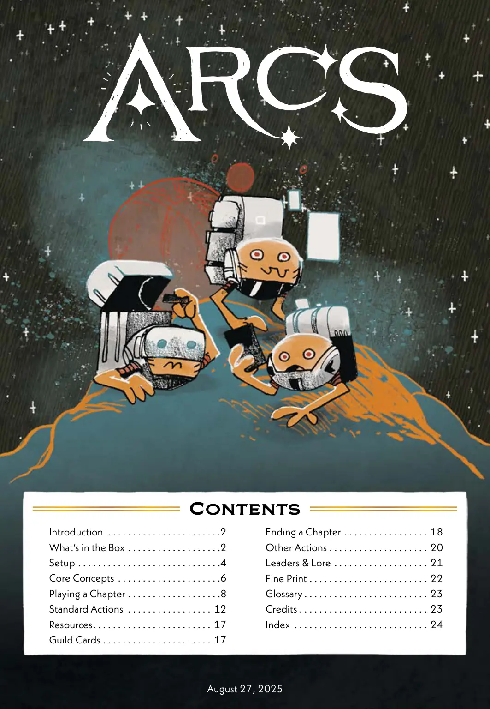
<figcaption>原版规则书 · 第 1 页（点击图片放大）</figcaption>
</figure>

<details class="mt-fold">
<summary>📝 第 1 页 AI 机翻对照（点击展开）</summary>
<div class="mt-body"><p>2025年8月27日</p>

<p>目录</p>

<p>介绍 . . . . . . . . . . . . . . . . . . . . . . . 2</p>

<p>盒内物品 . . . . . . . . . . . . . . . . . . . 2</p>

<p>设置 . . . . . . . . . . . . . . . . . . . . . . . . . . . . . 4</p>

<p>核心概念 . . . . . . . . . . . . . . . . . . . . . 6</p>

<p>进行一章 . . . . . . . . . . . . . . . . . . . 8</p>

<p>标准行动 . . . . . . . . . . . . . . . . . . 12</p>

<p>资源 . . . . . . . . . . . . . . . . . . . . . . . . 17</p>

<p>公会卡牌 . . . . . . . . . . . . . . . . . . . . . . . 17</p>

<p>结束一章 . . . . . . . . . . . . . . . . . . 18</p>

<p>其他行动 . . . . . . . . . . . . . . . . . . . . . 20</p>

<p>领袖与传说 . . . . . . . . . . . . . . . . . . . . 21</p>

<p>细则 . . . . . . . . . . . . . . . . . . . . . . . . . 22</p>

<p>术语表 . . . . . . . . . . . . . . . . . . . . . . . . . 23</p>

<p>致谢 . . . . . . . . . . . . . . . . . . . . . . . . . . 23</p>

<p>索引 . . . . . . . . . . . . . . . . . . . . . . . . . . . . 24</p></div>
</details>

<figure>
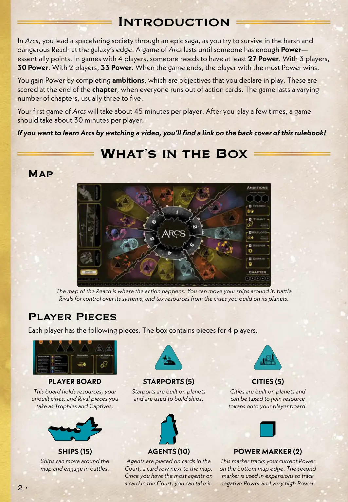
<figcaption>原版规则书 · 第 2 页（点击图片放大）</figcaption>
</figure>

<details class="mt-fold">
<summary>📝 第 2 页 AI 机翻对照（点击展开）</summary>
<div class="mt-body"><p>2 •</p>

<p>介绍</p>

<p>在《Arcs》中，你将领导一个太空文明，经历一场史诗般的冒险，试图在银河系边缘严酷而危险的边缘区域（Reach）中生存下来。《Arcs》游戏会一直持续，直到某位玩家积累了足够的能量（Power）——本质上就是分数。在4人游戏中，至少需要拥有27点能量。3人游戏中需要30点能量。2人游戏中需要33点能量。当游戏结束时，能量最多的玩家获胜。</p>

<p>你通过完成抱负（ambitions）来获得能量，这些是你在游戏中宣布的目标。这些抱负在章节结束时计分，届时所有人的行动卡都已用完。游戏持续不同数量的章节，通常是三到五个。</p>

<p>你的第一局《Arcs》游戏每位玩家大约需要45分钟。玩过几次后，一局游戏每位玩家应该需要大约30分钟。</p>

<p>如果你想通过观看视频来学习《Arcs》，可以在本规则书的封底找到链接！</p>

<p>盒内物品</p>

<p>地图</p>

<p>边缘区域（Reach）的地图是游戏进行的地方。你可以让你的飞船在地图上移动，与对手（Rivals）争夺对星系的控制权，并对你建造在行星上的城市征税。</p>

<p>玩家棋子</p>

<p>每位玩家拥有以下棋子。盒内包含4位玩家的棋子。</p>

<h2>玩家版图</h2>

<p>这块版图用于存放资源、你未建造的城市，以及你作为战利品（Trophies）和俘虏（Captives）获得的对手棋子。</p>

<h2>星港（STARPORTS）（5个）</h2>

<p>星港建造在行星上，用于建造飞船。</p>

<h2>城市（CITIES）（5个）</h2>

<p>城市建造在行星上，可以通过征税来获得资源指示物到你的玩家版图上。</p>

<h2>飞船（SHIPS）（15个）</h2>

<p>飞船可以在地图上移动并参与战斗。</p>

<h2>特工（AGENTS）（10个）</h2>

<p>特工放置在地图旁边的宫廷（Court）卡牌行上。一旦你在宫廷某张卡牌上拥有最多的特工，你就可以获得这张卡牌。</p>

<h2>能量标记（POWER MARKER）（2个）</h2>

<p>这个标记用于追踪你在地图底部的当前能量。第二个标记用于扩展中，用于追踪负能量和非常高的能量。</p></div>
</details>

<figure>
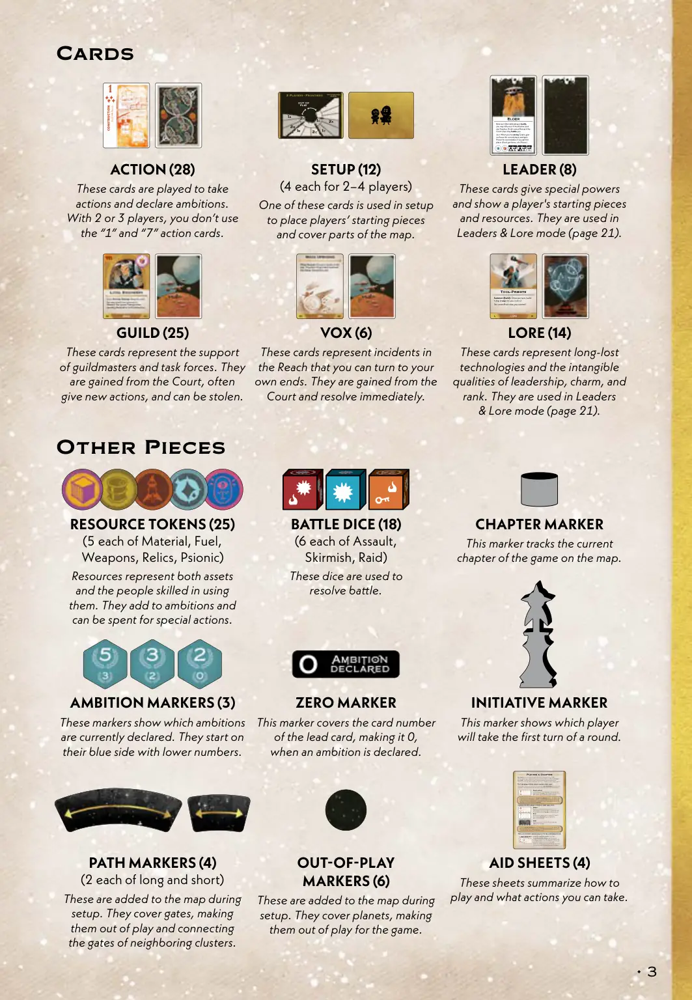
<figcaption>原版规则书 · 第 3 页（点击图片放大）</figcaption>
</figure>

<details class="mt-fold">
<summary>📝 第 3 页 AI 机翻对照（点击展开）</summary>
<div class="mt-body"><p>• 3</p>

<p>卡牌</p>

<h2>建设</h2>

<p>建造或修复</p>

<p>2 玩家 - 前沿</p>

<p>2a</p>

<p>1c</p>

<p>2c</p>

<p>2c</p>

<p>1c</p>

<p>1b</p>

<p>2b</p>

<p>1a</p>

<p>出牌</p>

<p>出牌</p>

<p>供有经验的玩家使用</p>

<p>A</p>

<p>B</p>

<p>C</p>

<p>长者。在战斗中防御后，你可以影响攻击者是否获得了任何战利品。对手在与你战斗时无法掠夺宫廷。</p>

<p>公正。在计分暴君时，第二名不得获得力量，第一名则获得第二名应得的力量。（不得获得额外的城市力量。）</p>

<h2>行动（28）</h2>

<p>这些卡牌用于执行行动和宣布野心。</p>

<p>2 或 3 名玩家时，不使用"1"和"7"行动卡牌。</p>

<h2>设置（12）</h2>

<p>（2-4 名玩家各 4 张）</p>

<p>设置时使用其中一张卡牌来放置玩家的起始棋子并覆盖地图的部分区域。</p>

<h2>领袖（8）</h2>

<p>这些卡牌提供特殊能力并显示玩家的起始棋子和资源。它们在领袖与传说模式中使用（第 21 页）。</p>

<h2>传说</h2>

<p>L</p>

<p>工具祭司</p>

<p>召唤（建造）：每回合一次，在你控制的任何城市建造 1 艘船。</p>

<p>是的，甚至包括你控制的对手城市！</p>

<h2>行会（25）</h2>

<p>这些卡牌代表行会大师和特遣部队的支持。它们从宫廷中获得，通常提供新行动，并且可以被偷取。</p>

<h2>声音（6）</h2>

<p>这些卡牌代表边境地区的事件，你可以将其用于自己的目的。它们从宫廷中获得并立即结算。</p>

<h2>传说（14）</h2>

<p>这些卡牌代表失落的科技以及领导魅力、魅力和等级等无形品质。它们在领袖与传说模式中使用（第 21 页）。</p>

<p>其他配件</p>

<h2>资源指示物（25）</h2>

<p>（材料、燃料、武器、圣物、灵能各 5 个）</p>

<p>资源代表资产和使用它们的人员。它们增加野心的价值，并可用于特殊行动。</p>

<h2>战斗骰子（18）</h2>

<p>（突击、小规模冲突、袭击各 6 个）</p>

<p>这些骰子用于解决战斗。</p>

<h2>章节标记</h2>

<p>这个标记追踪地图上当前的游戏章节。</p>

<h2>野心标记（3）</h2>

<p>这些标记显示当前宣布的野心。它们开始时数字较小的一面朝上（蓝色面）。</p>

<h2>零标记</h2>

<p>当宣布野心时，这个标记覆盖领先卡牌的数字，使其变为 0。</p>

<h2>先手标记</h2>

<p>这个标记显示哪位玩家将在一轮中首先行动。</p>

<p>进行一章</p>

<p>在一章中，玩家将进行多轮游戏，直到卡牌用完。</p>

<p>当一章结束时，玩家从已宣布的野心中获得力量。（见最后一页。）</p>

<p>在一轮中，每位玩家进行一个回合，从拥有先手的玩家开始。</p>

<p>当一轮结束时，弃置所有已打出的卡牌，并查看先手是否变更。</p>

<p>首先，拥有先手标记的玩家进行一个回合。</p>

<p>如果你的手牌为空或选择不出牌，则将先手顺时针传递给下一位玩家。</p>

<p>手中有牌的下一位玩家。他们代替你进行本轮的第一回合。</p>

<p>打出领出牌</p>

<p>你必须打出一张行动牌作为领出牌。你可以根据卡牌左上角的点数执行相应数量的行动。</p>

<p>（这张牌有4个点数，让你可以执行4个行动。）</p>

<p>其次，按顺时针顺序的其他每位玩家依次进行一个回合。</p>

<p>超越</p>

<p>打出一张与领出牌花色相同但数字更高的行动牌。（不是每张打出的牌！）</p>

<p>你可以根据你打出的牌上的点数执行相应数量的行动。</p>

<p>转向</p>

<p>打出任何不匹配领出牌花色的行动牌。</p>

<p>你可以在你打出的牌上执行一个行动。</p>

<p>（不是在领出牌上！）</p>

<p>复制</p>

<p>任意一张行动牌面朝下打出。你可以执行领出牌的一个行动。</p>

<p>第三，先看主动权是否变更玩家，然后弃置所有打出的牌。</p>

<p>主动权</p>

<p>如果有人夺取了主动权，他们保留它。</p>

<p>如果没有人夺取主动权，将主动权标记交给用数字最高的牌超越领出牌的玩家。如果没有人超越领出牌，主动权标记不变更玩家。</p>

<p>最后，弃置所有打出的牌并开始下一轮。</p>

<p>如果没有人手牌剩余，结束章节。</p>

<p>如果你拥有主动权，你可以声明你卡牌左下角所示的抱负：将零标记放在你卡牌数字上但不是点数上，并将最高可用的抱负标记放入地图上对应的抱负框中。（抱负列表在最后一页。）</p>

<p>如果你没有主动权且本轮还没有人夺取它，你可以夺取主动权标记：随你的第一张牌额外面朝下打出一张行动牌并忽略其行动，或者用"7"牌超越（仅限4人游戏）。</p>

<h2>路径标记 (4)</h2>

<p>（长路径和短路径各2个）</p>

<p>这些在设置期间添加到地图上。它们覆盖了门，使其无法使用，并连接了相邻星团的门。</p>

<h2>无法使用标记 (6)</h2>

<p>这些在设置期间添加到地图上。它们覆盖了行星，使其在游戏中无法使用。</p>

<h2>辅助卡 (4)</h2>

<p>这些卡片总结了如何游戏以及你可以执行哪些行动。</p></div>
</details>

<figure>
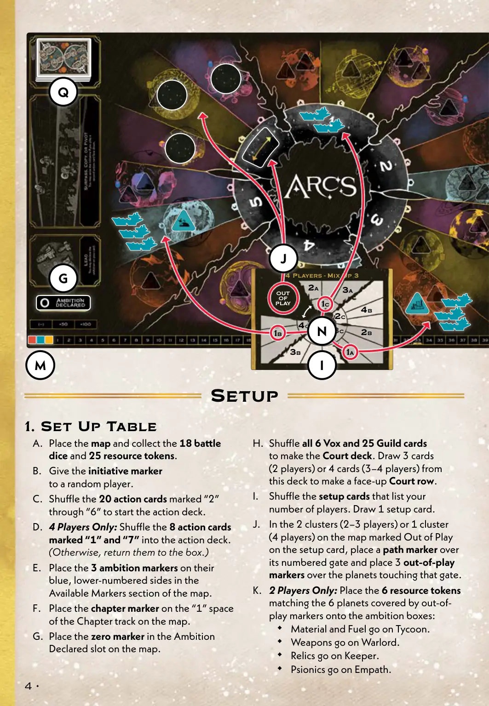
<figcaption>原版规则书 · 第 4 页（点击图片放大）</figcaption>
</figure>

<details class="mt-fold">
<summary>📝 第 4 页 AI 机翻对照（点击展开）</summary>
<div class="mt-body"><p>4 •</p>

<p>设置</p>

<h3>1. 设置桌面</h3>

<p>A. 放置地图并收集18个战斗骰子和25个资源指示物。</p>

<p>B. 将主动权标记交给随机一名玩家。</p>

<p>C. 洗牌标记有"2"到"6"的20张行动卡，组成行动牌库。</p>

<p>D. 仅限4人游戏：将标记有"1"和"7"的8张行动牌洗入行动牌库。（否则，将它们放回盒中。）</p>

<p>E. 将3个雄心标记放在地图的"可用标记"区域，蓝色面朝上，数字较小的一面朝上。</p>

<p>F. 将章节标记放在地图的章节轨道上的"1"格。</p>

<p>G. 将零标记放在地图的"已声明雄心"槽位中。</p>

<p>H. 洗混所有6张Vox牌和25张公会牌，组成宫廷牌库。从该牌库抽取3张牌（2人游戏）或4张牌（3-4人游戏），组成一个正面朝上的宫廷行。</p>

<p>I. 洗混标注了玩家数量的设置牌。抽取1张设置牌。</p>

<p>J. 在设置牌上标记为"不可用"的2个集群（2-3人游戏）或1个集群（4人游戏）中，在其编号的门前放置一个路径标记，并在接触该门的行星上放置3个不可用标记。</p>

<p>K. 仅限2人游戏：将6个与被不可用标记覆盖的6个行星相匹配的资源指示物放在雄心盒中：</p>

<p>• 材料和燃料放在大亨盒中。</p>

<p>• 武器放在军阀盒中。</p>

<p>• 遗物保管者放在保管者盒中。</p>

<p>• 心理学能力放在共情者盒中。</p>

<p>4人游戏 - 混合3个不可用标记</p>

<p>out</p>

<p>out</p>

<p>of</p>

<p>of</p>

<p>play</p>

<p>play</p>

<p>2b</p>

<p>1a</p>

<p>4a</p>

<p>4c</p>

<p>3c</p>

<p>3b</p>

<p>1c</p>

<p>3a</p>

<p>2a</p>

<p>1b</p>

<p>4b</p>

<p>2c</p>

<p>M</p>

<p>I</p>

<p>G</p>

<p>N</p>

<p>Q</p>

<p>J</p></div>
</details>

<figure>
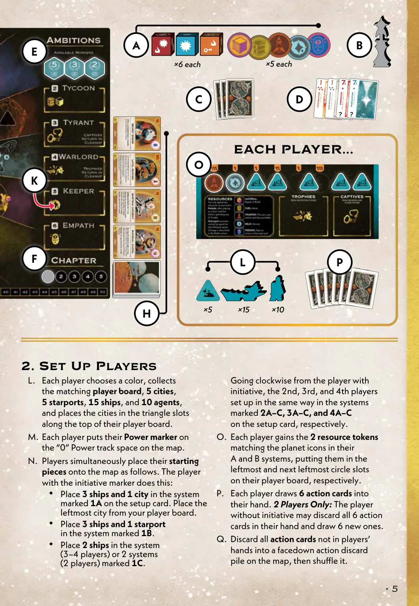
<figcaption>原版规则书 · 第 5 页（点击图片放大）</figcaption>
</figure>

<details class="mt-fold">
<summary>📝 第 5 页 AI 机翻对照（点击展开）</summary>
<div class="mt-body"><p>• 5</p>

<h3>2. 玩家设置</h3>

<p>L. 每位玩家选择一种颜色，收集对应的玩家版图、5个城市、5个太空港、15艘飞船和10个特工，并将城市放置在其玩家版图顶部三角形槽位中。</p>

<p>M. 每位玩家将其能量指示物放在版图上的"0"能量轨道格上。</p>

<p>N. 玩家同时将起始棋子放置到版图上，如下所示。拥有主动标记的玩家这样做：</p>

<p>• 在设置卡上标记为1A的星系中放置3艘飞船和1个城市。放置您玩家版图上最左边的城市。</p>

<p>• 在标记为1B的星系中放置3艘飞船和1个太空港。</p>

<p>• 在标记为1C的星系中放置2艘飞船（3-4人游戏）或在标记为1C的2个星系中各放置1艘飞船（2人游戏）。</p>

<p>从拥有主动标记的玩家开始顺时针方向，第二、第三和第四位玩家分别在设置卡上标记为2A-C、3A-C和4A-C的星系中以相同方式设置。</p>

<p>O. 每位玩家获得其A星系和B星系中与行星图标匹配的2个资源指示物，分别将其放在其玩家版图上最左边的和次左边的圆形槽位中。</p>

<p>P. 每位玩家抽取6张行动牌到手牌。仅限2人游戏：没有主动标记的玩家可以弃掉手中的全部6张行动牌并重新抽取6张新牌。</p>

<p>Q. 将所有不在玩家手中的行动牌弃入版图上一张面朝下的行动弃牌堆，然后洗混。</p>

<p>每位玩家...</p>

<p>×15</p>

<p>×10</p>

<p>×5</p>

<h2>建设</h2>

<p>建造或维修</p>

<h2>行政</h2>

<p>征税或维修或影响</p>

<p>?</p>

<h2>侵略</h2>

<p>战斗或移动或巩固</p>

<p>?</p>

<h2>动员</h2>

<p>移动或影响</p>

<p>×5 每种</p>

<p>×6 每种</p>

<p>E</p>

<p>F</p>

<p>K</p>

<p>B</p>

<p>C</p>

<p>D</p>

<p>P</p>

<p>L</p>

<p>O</p>

<p>H</p>

<p>A</p></div>
</details>

<figure>
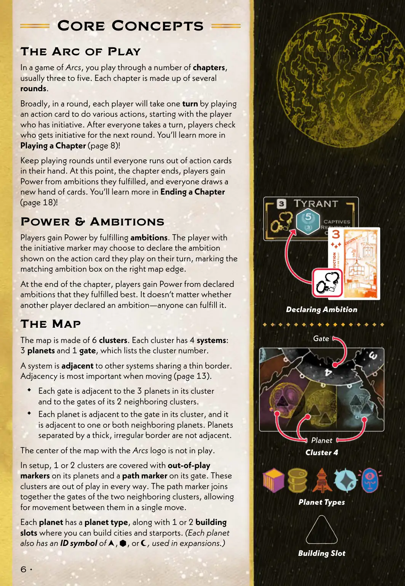
<figcaption>原版规则书 · 第 6 页（点击图片放大）</figcaption>
</figure>

<details class="mt-fold">
<summary>📝 第 6 页 AI 机翻对照（点击展开）</summary>
<div class="mt-body"><p>6 •</p>

<p>核心概念 </p>

<p>游戏进程</p>

<p>在《Arcs》游戏中，你们将经历数个章节，通常是三到五个。每个章节由多轮组成。</p>

<p>大致而言，在一轮中，每位玩家通过打出行动卡来执行各种行动，拥有先手权的玩家先行动。当所有玩家都行动完毕后，玩家们会检查谁获得下一轮的先手权。你将在"游戏章节"(第8页)中了解更多！</p>

<p>继续进行游戏，直到所有玩家的手牌用完行动卡。此时，章节结束，玩家们从已实现的雄心中获得力量，然后每人摸取一手新牌。你将在"章节结束"(第18页)中了解更多！</p>

<p>力量与雄心</p>

<p>玩家通过实现雄心来获得力量。拥有先手标记的玩家可以选择在其回合打出的行动卡上声明所示的雄心，并在右侧地图边缘标记相应的雄心框。</p>

<p>在章节结束时，玩家们从已声明且实现得最好的雄心中获得力量。无论其他玩家是否声明了该雄心—任何人都可以实现它。</p>

<p>地图</p>

<p>地图由6个星系组成。每个星系有4个星系：3个行星和1个门，门上标注了星系编号。</p>

<p>一个星系与共享细边界的其他星系相邻。相邻性在移动时(第13页)最为重要。</p>

<p>• 每个门与其星系内的3个行星以及其2个相邻星系的门相邻。</p>

<p>• 每个行星与其星系内的门相邻，并且与一个或两个相邻行星相邻。被粗不规则边界分隔的行星不相邻。</p>

<p>带有Arcs标志的地图中心不在游戏中。</p>

<p>在设置阶段，1或2个星系上的行星被"不参与游戏"标记覆盖，其门上放置一个路径标记。这些星系在任何方面都不参与游戏。路径标记将两个相邻星系的门连接起来，允许在单次移动中在它们之间移动。</p>

<p>每个行星都有一种行星类型，以及1或2个建筑槽位，你可以在其中建造城市和太空港。(每个行星还有一个ID符号</p>

<p>、</p>

<p>或 ，用于扩展。)</p>

<p>行星</p>

<p>门</p>

<p>星系4</p>

<p>行星类型</p>

<p>建筑槽位</p>

<h2>建设</h2>

<p>建造或维修</p>

<p>声明雄心</p></div>
</details>

<figure>
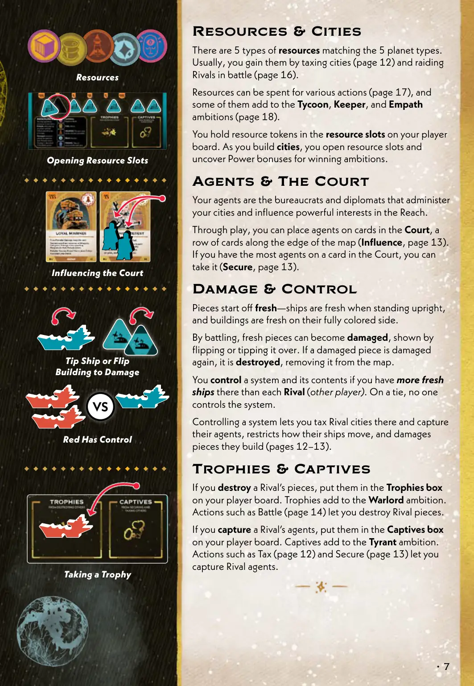
<figcaption>原版规则书 · 第 7 页（点击图片放大）</figcaption>
</figure>

<details class="mt-fold">
<summary>📝 第 7 页 AI 机翻对照（点击展开）</summary>
<div class="mt-body"><p>• 7</p>

<p>资源与城市</p>

<p>有5种资源类型，对应5种行星类型。</p>

<p>通常，你通过征收城市（第12页）和突袭对手的战斗（第16页）来获得资源。</p>

<p>资源可用于各种行动（第17页），其中一些资源会增加大亨、守护者和共情者的雄心值（第18页）。</p>

<p>你将资源指示物放在玩家版图上的资源槽位中。当你建造城市时，你会开启资源槽位并揭示赢得雄心值的能量奖励。</p>

<p>特工与宫廷</p>

<p>你的特工是管理你的城市并影响领域内强大利益的官僚和外交官。</p>

<p>通过游戏，你可以将特工放置在宫廷中的卡牌上，宫廷是一排沿着地图边缘的卡牌（影响力，第13页）。</p>

<p>如果你在某张宫廷卡牌上拥有最多的特工，你可以获取它（掌控，第13页）。</p>

<p>损伤与控制</p>

<p>棋子初始状态是完好的——飞船直立时是完好的，建筑物在完全着色的一面是完好的。</p>

<p>通过战斗，完好的棋子可能受损，通过翻转或倾倒来表示。如果受损的棋子再次受损，它将被摧毁，从地图上移除。</p>

<p>如果你在一个星系及其内容物中拥有的完好飞船数量多于每个对手（其他玩家），你就控制该星系。平局时，无人控制该星系。</p>

<p>控制一个星系使你能够征收对手的城市并俘获他们的特工，限制他们的飞船移动，并摧毁他们建造的棋子（第12-13页）。</p>

<p>战利品与俘虏</p>

<p>如果你摧毁了对手的棋子，将它们放入你玩家版图上的战利品盒中。战利品会增加军阀的雄心值。</p>

<p>诸如战斗（第14页）之类的行动可以让你摧毁对手的棋子。</p>

<p>如果你俘获了对手的特工，将他们放入你玩家版图上的俘虏盒中。俘虏会增加暴君的雄心值。</p>

<p>诸如征税（第12页）和掌控（第13页）之类的行动可以让你俘获对手的特工。</p>

<p>获取战利品</p>

<p>倾倒飞船或翻转建筑物以造成损伤</p>

<p>VS</p>

<p>红方拥有控制权</p>

<p>影响宫廷</p>

<p>资源</p>

<p>开启资源槽位</p></div>
</details>

<figure>
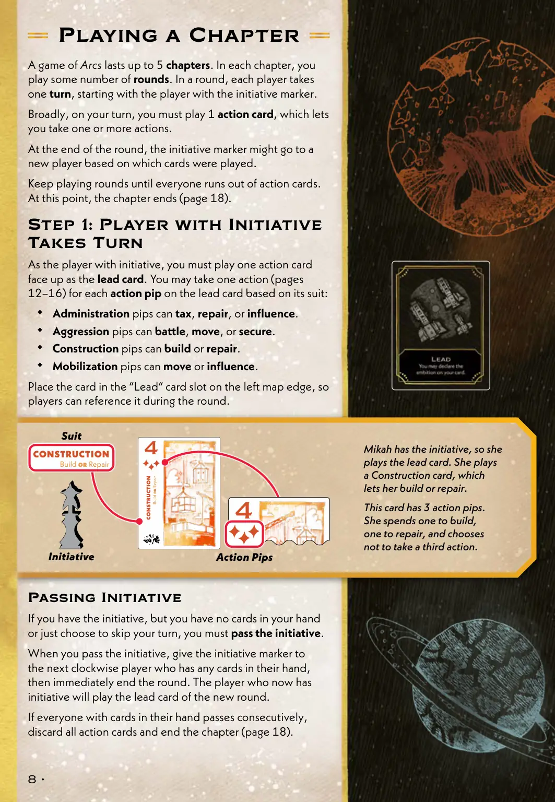
<figcaption>原版规则书 · 第 8 页（点击图片放大）</figcaption>
</figure>

<details class="mt-fold">
<summary>📝 第 8 页 AI 机翻对照（点击展开）</summary>
<div class="mt-body"><p>8 •</p>

<p>进行一章</p>

<p>《拱门》(Arcs) 游戏最多持续 5 章。每章中，你们会进行若干轮。在一轮中，每位玩家进行一个回合，从拥有先手标记的玩家开始。大体上，在你的回合中，你必须打出 1 张行动牌，这让你可以执行一个或多个行动。</p>

<p>在轮次结束时，先手标记可能会根据打出的牌转移到新的玩家手中。</p>

<p>继续进行轮次，直到所有人的行动牌都用完。此时，本章结束（第 18 页）。</p>

<p>第 1 步：拥有先手的玩家进行回合</p>

<p>作为拥有先手的玩家，你必须正面朝上打出一张行动牌作为领牌。你可以根据领牌的花色，为每个行动点执行一个行动（第 12-16 页）：</p>

<p>• 行政点可以征税、维修或施加影响。</p>

<p>• 侵略点可以战斗、移动或占领。</p>

<p>• 建设点可以建造或维修。</p>

<p>• 动员点可以移动或施加影响。</p>

<p>将牌放在左侧地图边缘的"领牌"槽位，这样玩家在轮次中可以参考它。</p>

<p>传递先手</p>

<p>如果你拥有先手，但手牌中没有牌或选择跳过你的回合，你必须传递先手。当你传递先手时，将先手标记交给下一个顺时针方向有手牌的玩家，然后立即结束轮次。现在拥有先手的玩家将进行新轮次的领牌。</p>

<p>如果所有有手牌的玩家连续传递先手，弃掉所有行动牌并结束本章（第 18 页）。</p>

<p>花色</p>

<p>行动点</p>

<p>米卡(Mikah)拥有先手，所以她打出领牌。她打出一张建设牌，这让她可以建造或维修。这张牌有 3 个行动点。她花费一个点建造，一个点维修，并选择不执行第三个行动。</p>

<p>先手</p>

<h2>建设</h2>

<p>建造或维修</p>

<h2>建设</h2>

<p>建造或维修</p></div>
</details>

<figure>
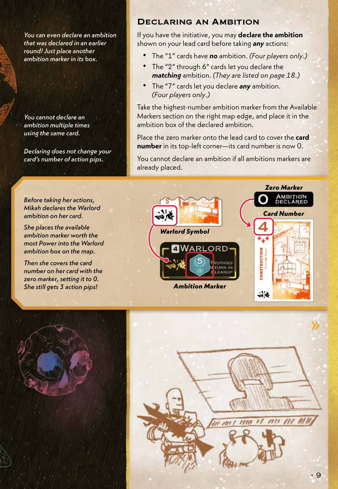
<figcaption>原版规则书 · 第 9 页（点击图片放大）</figcaption>
</figure>

<details class="mt-fold">
<summary>📝 第 9 页 AI 机翻对照（点击展开）</summary>
<div class="mt-body"><p>• 9</p>

<p>宣布野心</p>

<p>如果你拥有先手，你可以在执行任何行动前宣布你首张卡牌上显示的野心：</p>

<p>•</p>

<p>"1"卡牌没有野心。（仅限四人游戏。）</p>

<p>•</p>

<p>"2"到"6"的卡牌可以让你宣布相应的野心。（它们列在第18页。）</p>

<p>•</p>

<p>"7"的卡牌可以让你宣布任何野心。（仅限四人游戏。）</p>

<p>从右侧地图边缘的可用指示物区域中，拿取编号最高的野心指示物，并将其放置在所宣布野心的野心框内。</p>

<p>将零指示物放在首张卡牌上，覆盖其左上角的卡牌编号——现在它的卡牌编号为0。</p>

<p>如果所有野心指示物都已放置，你不能宣布野心。</p>

<p>»</p>

<p>卡牌编号</p>

<p>零指示物</p>

<p>野心指示物</p>

<p>你甚至可以宣布在前一轮中已经宣布过的野心！只需在其框内再放置一个野心指示物即可。</p>

<p>宣布不会改变你卡牌的行动点数。</p>

<p>在执行她的行动前，米卡宣布了她卡牌上的军阀野心。</p>

<p>她将可用的、价值最高的力量指示物放置在地图上的军阀野心框中。</p>

<p>然后她用零指示物覆盖她卡牌上的卡牌编号，将其设置为0。</p>

<p>她仍然获得3个行动点！</p>

<p>你不能使用同一张卡牌多次宣布野心。</p>

<p>军阀符号</p>

<h2>建设</h2>

<p>建造或修复</p>

<h2>CON</h2></div>
</details>

<figure>
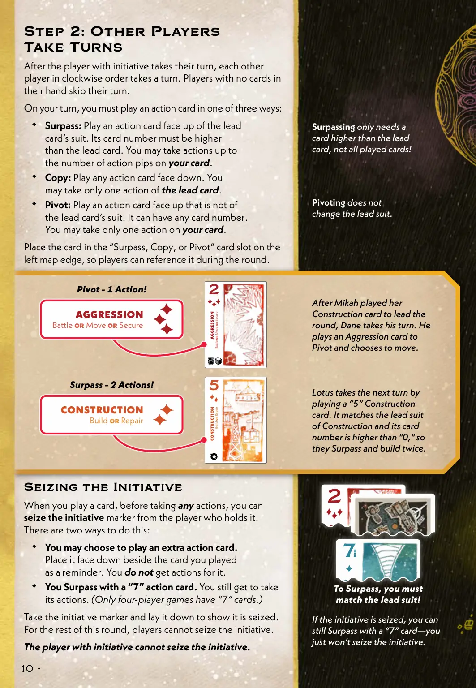
<figcaption>原版规则书 · 第 10 页（点击图片放大）</figcaption>
</figure>

<details class="mt-fold">
<summary>📝 第 10 页 AI 机翻对照（点击展开）</summary>
<div class="mt-body"><p>10 •</p>

<h2>步骤2：其他玩家</h2>

<p>轮流行动</p>

<p>在拥有先手标记的玩家完成他们的回合后，其他玩家按顺时针顺序依次进行回合。手牌中没有卡牌的玩家跳过他们的回合。</p>

<p>在你的回合，你必须以三种方式之一打出一张行动卡：</p>

<p>• 超越：正面打出一张领先卡牌花色的行动卡。它的卡牌数字必须高于领先卡牌。你可以根据你卡牌上的行动点数执行相应数量的行动。</p>

<p>• 复制：背面打出任意一张行动卡。你只能执行领先卡牌的一种行动。</p>

<p>• 转换：正面打出一张不是领先卡牌花色的行动卡。它可以有任何卡牌数字。你只能执行你卡牌上的一种行动。</p>

<p>将卡牌放置在左侧版图边缘的"超越、复制或转换"卡牌槽中，以便玩家在轮次中参考。</p>

<p>夺取先手</p>

<p>当你打出卡牌时，在执行任何行动之前，你可以从当前持有先手标记的玩家那里夺取它。有两种方法可以做到：</p>

<p>• 你可以选择多打一张行动卡。将它面朝下放在你打出的卡牌旁边作为提醒。你不能为它获得行动。</p>

<p>• 你用一张"7"行动卡超越。你仍然可以获得它的行动。（只有四人游戏才有"7"卡牌。）</p>

<p>拿走先手标记并放下它以显示已被夺取。在本轮剩余时间内，玩家不能夺取先手。拥有先手的玩家不能夺取先手。</p>

<p>转换 - 1个行动！</p>

<p>超越 - 2个行动！</p>

<p>超越只需要一张高于领先卡牌的卡，而不是所有已打出的卡！</p>

<p>转换不会改变领先花色。</p>

<p>在 Mikah 打出她的建造卡来领先轮次后，Dane 进行他的回合。他打出一张攻击卡进行转换，并选择移动。</p>

<p>Lotus 通过打出一张"5"建造卡进行下一回合。它匹配建造的领先花色，且卡牌数字高于"0"，所以他们超越并建造两次。</p>

<p>如果先手已被夺取，你仍然可以用"7"卡超越——你只是不会夺取先手。</p>

<h2>攻击</h2>

<p>战斗或移动或巩固</p>

<h2>攻击</h2>

<p>战斗或移动或巩固</p>

<h2>建造</h2>

<p>建造或修复</p>

<h2>建造</h2>

<p>建造或修复</p></div>
</details>

<figure>
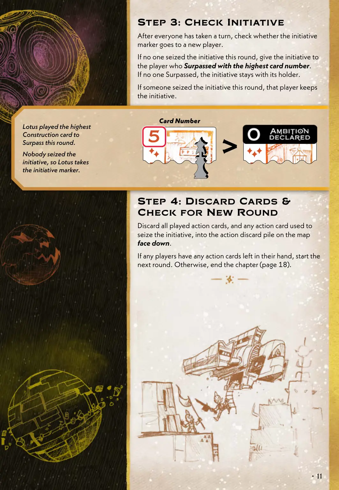
<figcaption>原版规则书 · 第 11 页（点击图片放大）</figcaption>
</figure>

<details class="mt-fold">
<summary>📝 第 11 页 AI 机翻对照（点击展开）</summary>
<div class="mt-body"><p>• 11</p>

<p>步骤3：检查先手</p>

<p>在每个人都完成一个回合后，检查先手标记是否要交给新玩家。</p>

<p>如果本轮没有人夺取先手，则将先手交给以最高卡牌数字超越的玩家。</p>

<p>如果没有人超越，先手保留在当前持有者手中。</p>

<p>如果有人在本轮夺取了先手，则该玩家保留先手。</p>

<p>步骤4：弃牌并检查新回合</p>

<p>将所有已使用的行动卡和用于夺取先手的行动卡弃入版图上的行动弃牌堆，面朝下放置。</p>

<p>如果有玩家手中有剩余的行动卡，则开始下一轮。否则，章节结束（第18页）。</p>

<p>卡牌数字</p>

<p>莲花本轮以最高的建设卡超越。</p>

<p>没有人夺取先手，所以莲花获得先手标记。</p>

<blockquote>

</blockquote>

<p>N</p>

<p>r</p>

<p>N</p>

<p>r</p></div>
</details>

<figure>
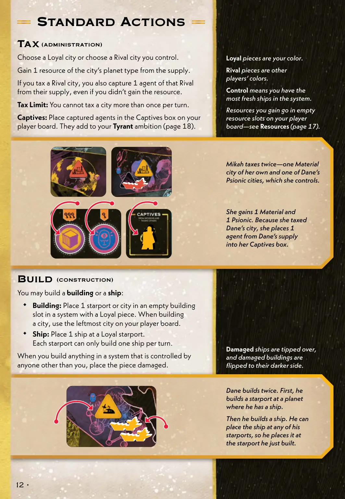
<figcaption>原版规则书 · 第 12 页（点击图片放大）</figcaption>
</figure>

<details class="mt-fold">
<summary>📝 第 12 页 AI 机翻对照（点击展开）</summary>
<div class="mt-body"><p>12 •</p>

<p>标准行动 </p>

<p>征税（行政）</p>

<p>选择一个忠诚城市或你控制的敌对城市。</p>

<p>从资源库中获得该城市所属星球类型的1个资源。</p>

<p>如果你征税敌对城市，你还要从该敌对的资源库中俘获1个特工，即使你没有获得资源。</p>

<p>征税限制：每回合你不能对同一城市征税超过一次。</p>

<p>俘虏：将俘获的特工放置在你玩家板上的俘虏方框中。它们会增加你的暴君野心（第18页）。</p>

<p>建造（建设）</p>

<p>你可以建造建筑或飞船：</p>

<p>• 建筑：在拥有忠诚棋子的系统的空建筑槽位中放置1个太空港或城市。建造城市时，使用你玩家板上的最左侧城市。</p>

<p>• 飞船：在忠诚太空港上放置1艘飞船。</p>

<p>每个太空港每回合只能建造一艘飞船。</p>

<p>当你在非你控制的系统中建造任何东西时，放置受损的棋子。</p>

<p>受损的飞船被翻倒，</p>

<p>受损的建筑被翻到其较暗的一面。</p>

<p>忠诚棋子是你的颜色。</p>

<p>敌对棋子是其他玩家的颜色。</p>

<p>控制意味着你在该系统中拥有最多的新飞船。</p>

<p>你获得的资源放入你玩家板上的空资源槽位中——参见资源（第17页）。</p>

<p>米卡征税两次——她自己的一个材料城市和丹恩的一个她控制的灵能城市。</p>

<p>她获得1个材料和1个灵能。因为她征税了丹恩的城市，她从丹恩的资源库中取出1个特工放入她的俘虏方框。</p>

<p>丹恩建造两次。首先，他在一个有飞船的星球上建造了一个太空港。</p>

<p>然后他建造了一艘飞船。他可以将飞船放置在他的任何太空港上，所以他把它放在他刚刚建造的太空港上。</p></div>
</details>

<figure>
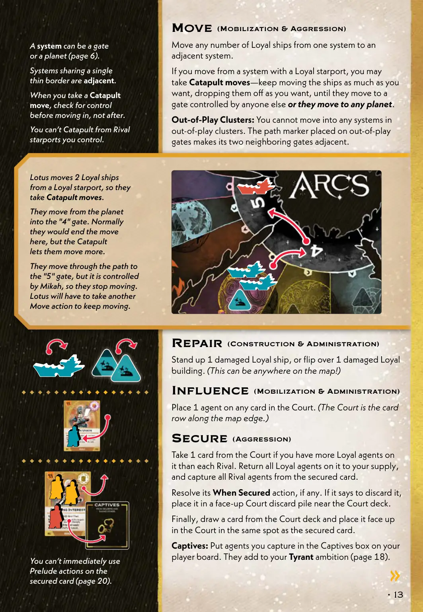
<figcaption>原版规则书 · 第 13 页（点击图片放大）</figcaption>
</figure>

<details class="mt-fold">
<summary>📝 第 13 页 AI 机翻对照（点击展开）</summary>
<div class="mt-body"><p>• 13</p>

<p>移动（动员与侵略）</p>

<p>将任意数量的忠诚飞船从一个星系移动到相邻的星系。</p>

<p>如果你从一个拥有忠诚星港的星系移动，你可以进行弹射移动——只要你愿意，就持续移动飞船，随意投放它们，直到它们移动到由其他人控制的门，或者移动到任何行星。</p>

<p>游戏外星团：你不能移动到游戏外星团中的任何星系。放置在游戏外门上的路径标记使其两个相邻的门变得相邻。</p>

<p>修复（建设与管理）</p>

<p>竖起1艘受损的忠诚飞船，或者翻转1个受损的忠诚建筑。（这可以在地图上的任何位置！）</p>

<p>影响力（动员与管理）</p>

<p>在宫廷的任意一张卡牌上放置1个特工。（宫廷是沿着地图边缘的一排卡牌。）</p>

<p>夺取（侵略）</p>

<p>如果你在一张卡牌上的忠诚特工数量比每个对手都多，则从宫廷中获取1张该卡牌。将卡牌上所有的忠诚特工返还到你的供应区，并夺取卡牌上所有的对手特工。执行其"被夺取时"行动（如果有）。如果指示要弃置该卡牌，则将其放置在宫廷牌堆附近的正面朝上的宫廷弃牌堆中。最后，从宫廷牌堆中抽取一张卡牌，正面朝上地放置在宫廷中，位置与被夺取的卡牌相同。</p>

<p>俘虏：将你俘虏的特工放入你玩家板上的俘虏盒中。它们会增加你的暴君野心（第18页）。</p>

<p>»</p>

<p>你不能立即在夺取的卡牌上使用前奏行动（第20页）。</p>

<p>一个星系可以是门或行星（第6页）。</p>

<p>共享单条细边界的星系是相邻的。</p>

<p>当你进行弹射移动时，在移动前检查控制权，而不是移动后。</p>

<p>你不能从你控制的对手星港进行弹射移动。</p>

<p>莲花移动2艘忠诚飞船，从忠诚星港出发，因此它们可以进行弹射移动。</p>

<p>它们从行星移动到"4"门。通常它们会在此结束移动，但弹射让它们可以移动更多。</p>

<p>它们通过路径移动到"5"门，但该门由米卡控制，因此它们停止移动。</p>

<p>莲花将需要再执行一次移动行动来继续移动。</p></div>
</details>

<figure>
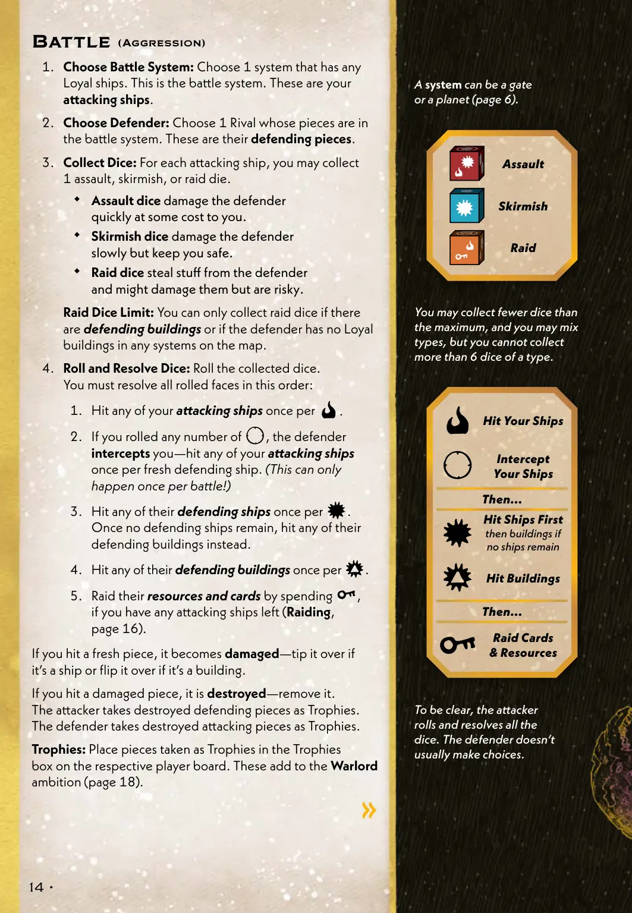
<figcaption>原版规则书 · 第 14 页（点击图片放大）</figcaption>
</figure>

<details class="mt-fold">
<summary>📝 第 14 页 AI 机翻对照（点击展开）</summary>
<div class="mt-body"><p>14 •</p>

<p>战斗（侵略）</p>

<ol>
  <li>选择战斗系统：选择1个拥有任何忠诚舰船的系统。这是战斗系统。这些是你的攻击舰船。</li>
  <li>选择防御者：选择1个其棋子位于战斗系统中的对手。这些是他们的防御棋子。</li>
</ol>

<h3>3. 收集骰子：对于每艘攻击舰船，你可以收集1个突击、小规模冲突或突袭骰子。</h3>

<p>•</p>

<p>突击骰子能快速伤害防御者，但会对你造成一定代价。</p>

<p>•</p>

<p>小规模冲突骰子能缓慢伤害防御者，但能保持你的安全。</p>

<p>•</p>

<p>突袭骰子能从防御者那里窃取物品，并可能伤害他们，但有风险。</p>

<p>突袭骰子限制：只有在存在防御建筑或防御者在地图上任何系统中都没有忠诚建筑时，你才能收集突袭骰子。</p>

<ol>
  <li>投掷并解决骰子：投掷收集的骰子。</li>
</ol>

<p>你必须按以下顺序解决所有投掷出的面：</p>

<h3>1. 每个面击中你的任意一艘攻击舰船一次。</h3>

<h3>2. 如果你投掷出任意数量的面，防御者会拦截你—每个新的防御舰船击中你的任意一艘攻击舰船一次。（这每场战斗只能发生一次！）</h3>

<h3>3. 每个面击中他们的任意一艘防御舰船一次。</h3>

<p>当没有防御舰船剩余时，改为击中他们的任意防御建筑。</p>

<h3>4. 每个面击中他们的任意防御建筑一次。</h3>

<h3>5. 如果你还剩有攻击舰船，通过花费面来突袭他们的资源和卡牌（突袭，第16页）。</h3>

<p>如果你击中一个新棋子，它会受损—如果是舰船则将其推倒，如果是建筑则将其翻转。</p>

<p>如果你击中一个受损棋子，它会被摧毁—将其移除。</p>

<p>攻击者将摧毁的防御棋子作为战利品。</p>

<p>防御者将摧毁的攻击棋子作为战利品。</p>

<p>战利品：将作为战利品获得的棋子放在各自玩家板上的战利品盒中。这些会增加军阀野心（第18页）»</p>

<p>一个系统可以是星门或行星（第6页）。</p>

<p>你可以收集少于最大数量的骰子，也可以混合类型，但你不能收集超过6个同类型的骰子。</p>

<p>明确地说，攻击者投掷并解决所有骰子。防御者通常不做选择。</p>

<p>突击</p>

<p>小规模冲突</p>

<p>突袭</p>

<p>击中你的舰船</p>

<p>拦截你的舰船</p>

<p>然后...</p>

<p>先击中舰船</p>

<p>如果没有舰船剩余则击中建筑</p>

<p>击中建筑</p>

<p>然后...</p>

<p>突袭卡牌</p>

<p>和资源</p></div>
</details>

<figure>
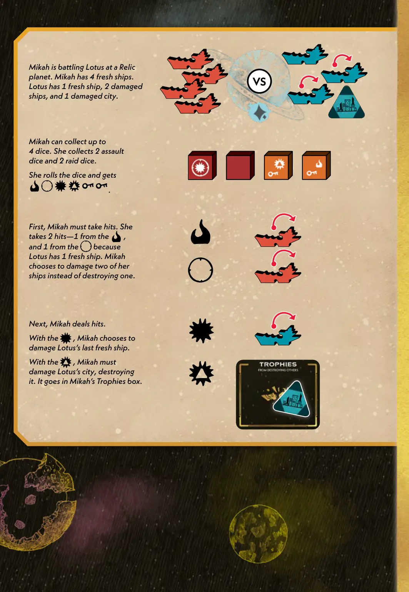
<figcaption>原版规则书 · 第 15 页（点击图片放大）</figcaption>
</figure>

<details class="mt-fold">
<summary>📝 第 15 页 AI 机翻对照（点击展开）</summary>
<div class="mt-body"><p>米卡在遗迹行星上与莲花战斗。米卡有4艘新舰船。</p>

<p>莲花有1艘新舰船、2艘受损舰船和1座受损城市。</p>

<p>米卡最多可以收集4个骰子。她收集了2个突击骰子和2个突袭骰子。</p>

<p>她投掷骰子得到。</p>

<p>首先，米卡必须承受伤害。她承受2点伤害—1点来自面，1点来自面，因为莲花有1艘新舰船。米卡选择损坏她的两艘舰船，而不是摧毁一艘。</p>

<p>接下来，米卡造成伤害。</p>

<p>通过面，米卡选择损坏莲花的最后一艘新舰船。</p>

<p>通过面，米卡必须损坏莲花的城市，摧毁它。它进入米卡的战利品盒。</p>

<p>VS</p></div>
</details>

<figure>
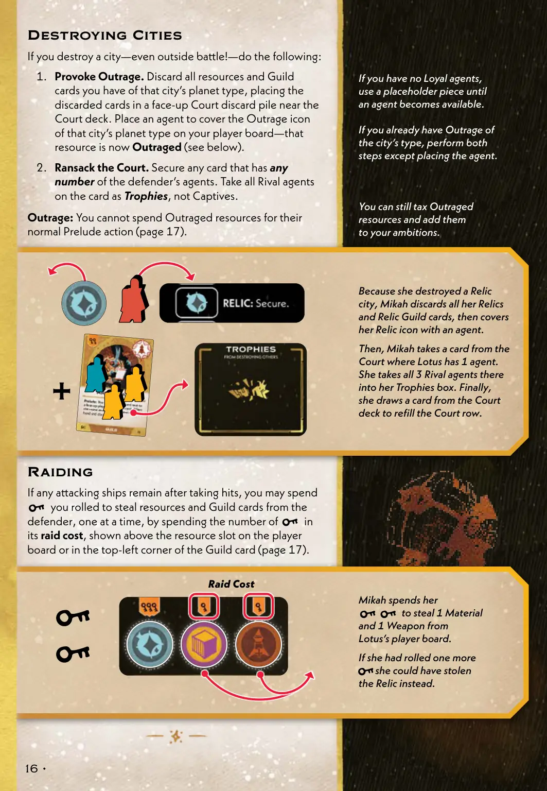
<figcaption>原版规则书 · 第 16 页（点击图片放大）</figcaption>
</figure>

<details class="mt-fold">
<summary>📝 第 16 页 AI 机翻对照（点击展开）</summary>
<div class="mt-body"><p>16 •</p>

<p>摧毁城市</p>

<p>如果你摧毁一座城市——即使在战斗之外！——执行以下操作：</p>

<ol>
  <li>引发愤怒。弃置你所有该城市星球类型的资源和公会牌，将弃置的牌放在牌库附近的公开宫廷弃牌堆中。在你的玩家板上放置一个代理来覆盖该城市星球类型的愤怒图标——该资源现在已处于愤怒状态（见下文）。</li>
  <li>洗劫宫廷。获取任何拥有任意数量防御方代理的牌。将牌上所有的敌方代理作为战利品而非俘虏带走。</li>
</ol>

<p>愤怒：你不能将处于愤怒状态的资源用于其常规的序曲行动（第17页）。</p>

<p>突袭</p>

<p>如果在承受打击后仍有任何攻击舰船，你可以通过花费掷出的骰子来从防御方那里偷取资源和公会牌，一次偷取一个，花费的数量显示在玩家板上的资源槽上方或公会牌的左上角（第17页）。</p>

<p>你仍然可以对处于愤怒状态的资源征税，并将它们添加到你的抱负中。</p>

<p>如果你没有忠诚代理，使用一个占位棋子直到有代理可用。</p>

<p>如果你已经拥有该城市类型的愤怒，执行两个步骤，但放置代理除外。</p>

<p>因为米卡摧毁了一座遗迹城市，她弃置了她所有的遗迹和遗迹公会牌，然后用一个代理覆盖她的遗迹图标。然后，米卡从宫廷中获取一张莲花拥有1个代理的牌。她将那里所有的3个敌方代理放入她的战利品盒。最后，她从牌库中抽一张牌来补充宫廷行。</p>

<p>米卡花费她的骰子来从莲花的玩家板上偷取1个资源和1个武器。如果她多掷出一个骰子，她就可以偷取那个遗迹。</p>

<p>突袭成本</p>

<p>+</p></div>
</details>

<figure>
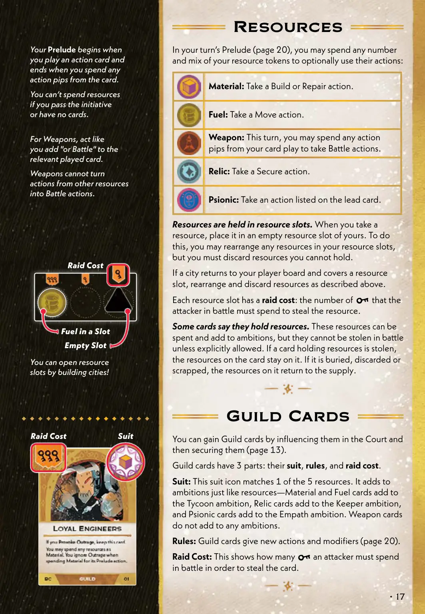
<figcaption>原版规则书 · 第 17 页（点击图片放大）</figcaption>
</figure>

<details class="mt-fold">
<summary>📝 第 17 页 AI 机翻对照（点击展开）</summary>
<div class="mt-body"><p>• 17</p>

<p>资源</p>

<p>在你的回合的序曲阶段（第20页），你可以花费任意数量和组合的资源指示物来选择性地使用它们的效果：</p>

<p>材料：执行建造或修复行动。</p>

<p>燃料：执行移动行动。</p>

<p>武器：本回合中，你可以从你打出的卡牌中花费任意行动点数来执行战斗行动。</p>

<p>遗物：执行夺取行动。</p>

<p>灵能：执行领导卡上列出的行动。</p>

<p>资源被存放在资源槽中。当你获得资源时，将其放置在你的一个空资源槽中。为此，你可以重新排列你资源槽中的任何资源，但你必须丢弃你无法持有的资源。</p>

<p>如果一个城市回到你的玩家版图上并覆盖了一个资源槽，请按照上述方式重新排列并丢弃资源。</p>

<p>每个资源槽都有一个掠夺成本：即攻击者在战斗中必须花费以窃取该资源的点数。</p>

<p>有些卡牌表示它们持有资源。这些资源可以被花费并增加雄心值，但除非明确允许，否则它们不能在战斗中被窃取。如果一张持有资源的卡牌被窃取，卡牌上的资源会留在上面。如果它被掩埋、弃置或拆解，卡牌上的资源会返回到资源池中。</p>

<p>公会卡</p>

<p>你可以通过在宫廷中影响它们，然后夺取它们（第13页）来获得公会卡。</p>

<p>公会卡有3个部分：它们的花色、规则和掠夺成本。</p>

<p>花色：这个花色图标与5种资源中的1种相匹配。它像资源一样增加雄心值——材料和燃料卡增加大亨雄心值，遗物卡增加守护者雄心值，灵能卡增加共情者雄心值。武器卡不增加任何雄心值。</p>

<p>规则：公会卡提供新的行动和修正（第20页）。</p>

<p>掠夺成本：这显示了攻击者必须在战斗中花费多少点数才能窃取该卡牌。</p>

<p>掠夺成本</p>

<p>花色</p>

<p>对于武器，就像你在相关的打出卡牌上添加"或战斗"一样。</p>

<p>武器不能将其他资源的行动转化为战斗行动。</p>

<p>你的序曲阶段从你打出行动卡开始，到你花费该卡上的任何行动点数时结束。</p>

<p>如果你放弃主动权或没有卡牌，你不能花费资源。</p>

<p>你可以通过建造城市来开启资源槽！</p>

<p>燃料在槽中</p>

<p>掠夺成本</p>

<p>空槽</p></div>
</details>

<figure>
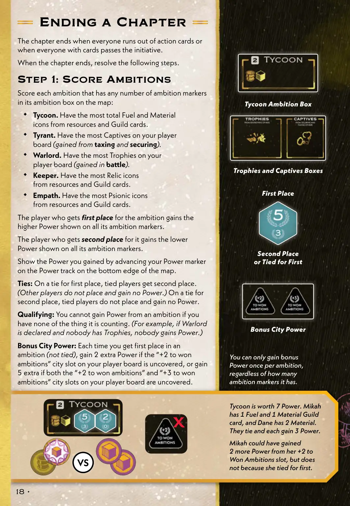
<figcaption>原版规则书 · 第 18 页（点击图片放大）</figcaption>
</figure>

<details class="mt-fold">
<summary>📝 第 18 页 AI 机翻对照（点击展开）</summary>
<div class="mt-body"><p>18 •</p>

<p>结束一章</p>

<p>当所有人的行动卡用完，或者所有持有卡牌的玩家都让出主动权时，本章结束。</p>

<p>当一章结束时，执行以下步骤。</p>

<p>步骤1：计分抱负</p>

<p>对地图上抱负框中拥有任何数量抱负标记的每个抱负进行计分：</p>

<p>•</p>

<p>大亨。拥有来自资源和公会卡牌的燃料和图标总数最多。</p>

<p>•</p>

<p>暴君。在你的玩家版面上拥有最多俘虏（通过征税和安保获得）。</p>

<p>•</p>

<p>军阀。在你的玩家版面上拥有最多战利品（在战斗中获得）。</p>

<p>•</p>

<p>守护者。拥有来自资源和公会卡牌的圣物图标最多。</p>

<p>•</p>

<p>共情者。拥有来自资源和公会卡牌的灵能图标最多。</p>

<p>在某个抱负中获得第一名的玩家获得该抱负所有标记上显示的较高能量值。</p>

<p>在某个抱负中获得第二名的玩家获得该抱负所有标记上显示的较低能量值。</p>

<p>通过在地图底部的能量值轨道上推进你的能量标记来显示你获得的能量值。</p>

<p>平局：如果第一名出现平局，平局玩家获得第二名。（其他玩家不排名且不获得能量值。）如果第二名出现平局，平局玩家不排名且不获得能量值。</p>

<p>资格条件：如果你在被计数的项目上没有任何东西，则无法从该抱负中获得能量值。（例如，如果宣布了军阀抱负且没有人有战利品，则没有人获得能量值。）</p>

<p>奖励城市能量：每次你在某个抱负中获得第一名（非平局），如果你的玩家版面上的"赢得抱负+2"城市槽位已揭开，则获得2点额外能量值；或者如果你的玩家版面上的"赢得抱负+2"和"赢得抱负+3"城市槽位都已揭开，则获得5点额外能量值。</p>

<p>大亨价值7点能量值。米卡（Mikah）有1个燃料和1个材料公会卡牌，而戴恩（Dane）有2个材料。他们平局，各自获得3点能量值。米卡可以从她的"赢得抱负+2"槽位获得2点额外能量值，但因为她是平局第一，所以没有获得。</p>

<p>无论某个抱负有多少标记，你每个抱负只能获得一次奖励能量值。</p>

<p>奖励城市能量</p>

<p>大亨抱负框</p>

<p>战利品和俘虏框</p>

<p>第一名</p>

<p>第二名</p>

<p>或平局第一</p>

<p>VS</p>

<p>X</p></div>
</details>

<figure>
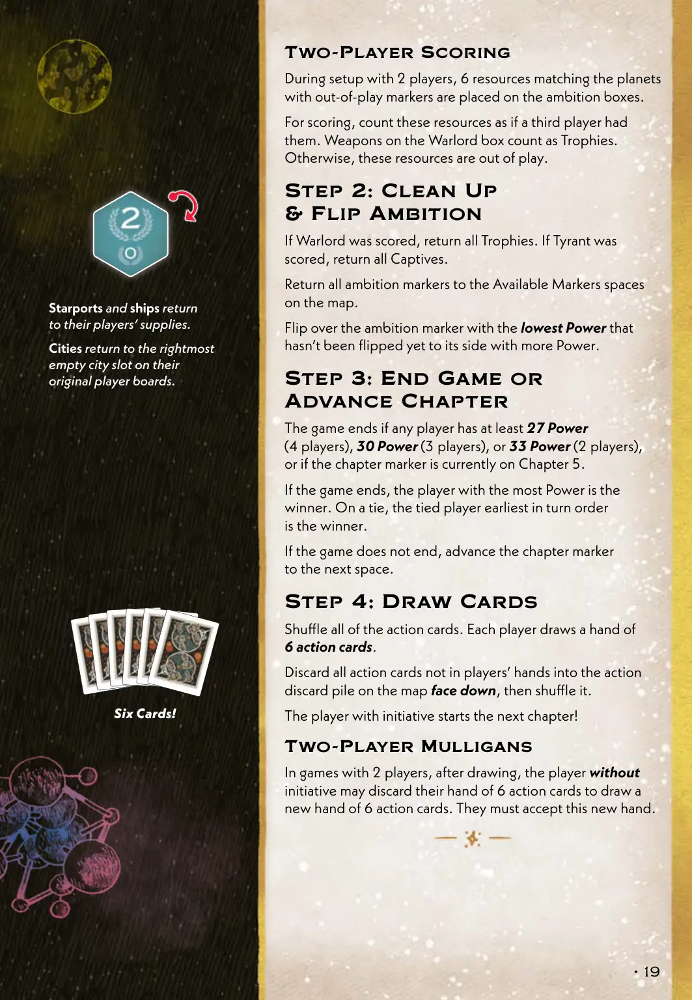
<figcaption>原版规则书 · 第 19 页（点击图片放大）</figcaption>
</figure>

<details class="mt-fold">
<summary>📝 第 19 页 AI 机翻对照（点击展开）</summary>
<div class="mt-body"><p>• 19</p>

<p>星际港和飞船返回到玩家的资源库。</p>

<p>城市返回到其原始玩家版图上最右侧的空城市槽位。</p>

<p>双人计分</p>

<p>在双人设置期间，6个与带有"未使用"标记的行星相匹配的资源被放置在雄心盒子中。</p>

<p>计分时，将这些资源视为第三玩家拥有它们。军阀盒子上的武器视为战利品。</p>

<p>否则，这些资源未使用。</p>

<p>第2步：清理并翻转雄心</p>

<p>如果计分了军阀，则返还所有战利品。如果计分了暴君，则返还所有俘虏。</p>

<p>将所有雄心标记返还到地图上的可用标记空间。</p>

<p>将尚未翻转的、力量值最低的雄心标记翻转至力量值更高的一面。</p>

<p>第3步：游戏结束或推进章节</p>

<p>如果有任何玩家拥有至少27点力量（4人游戏）、30点力量（3人游戏）或33点力量（2人游戏），或者章节标记当前在第5章，则游戏结束。</p>

<p>如果游戏结束，拥有最多力量的玩家获胜。平局时，回合顺序靠前的平局玩家获胜。</p>

<p>如果游戏未结束，将章节标记推进到下一个空间。</p>

<p>第4步：抽牌</p>

<p>洗混所有行动卡。每位玩家抽取6张行动牌的手牌。</p>

<p>将不在玩家手中的所有行动牌弃入地图上的行动弃牌堆（面朝下），然后洗混它。</p>

<p>拥有先手权的玩家开始下一章节！</p>

<p>双人换牌</p>

<p>在双人游戏中，抽牌后，无先手权的玩家可以弃掉其6张行动牌的手牌，重新抽取6张新行动牌。他们必须接受这副新手牌。</p>

<p>六张牌！</p></div>
</details>

<figure>
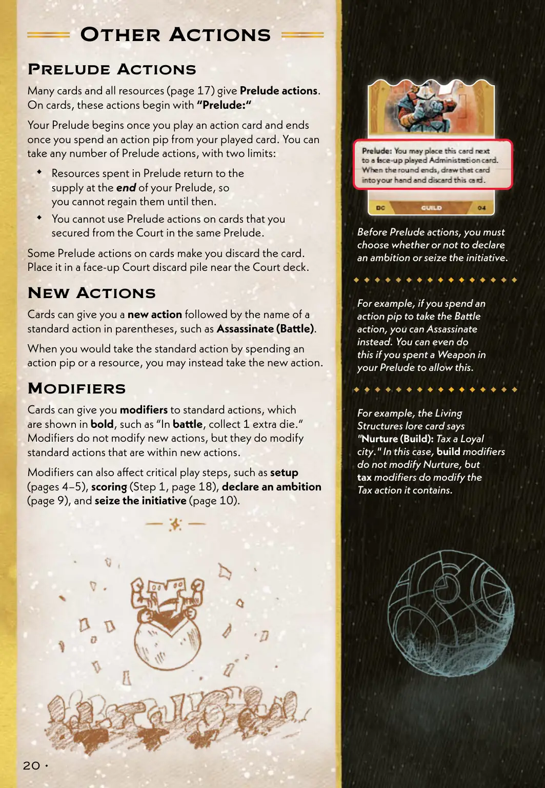
<figcaption>原版规则书 · 第 20 页（点击图片放大）</figcaption>
</figure>

<details class="mt-fold">
<summary>📝 第 20 页 AI 机翻对照（点击展开）</summary>
<div class="mt-body"><p>20 •</p>

<p>在序曲行动之前，你必须选择是否宣布野心或夺取主动权。</p>

<p>例如，"生命结构"（Living Structures）背景卡牌写着"培育（建造）：征收一个忠诚城市"。在这种情况下，建造修正不会影响培育，但税收修正会影响其中包含的征收行动。</p>

<p>例如，如果你花费一个行动点来执行战斗行动，你可以改为执行暗杀行动。即使你在序曲中花费了一件武器来允许这样做，你甚至也可以这样做。</p>

<p>其他行动 </p>

<p>序曲行动</p>

<p>许多卡牌和所有资源（第17页）都提供序曲行动。</p>

<p>在卡牌上，这些行动以"序曲："开头</p>

<p>你的序曲在你打出行动卡牌时开始，在你从打出的卡牌中花费一个行动点时结束。你可以执行任意数量的序曲行动，但有两个限制：</p>

<p>•</p>

<p>在序曲中花费的资源会在你的序曲结束时返回到供应区，因此在此之前你无法重新获得它们。</p>

<p>•</p>

<p>你不能在序曲中使用你在同一序曲中从宫廷获取的卡牌上的序曲行动。</p>

<p>一些卡牌上的序曲行动会让你弃置该卡牌。将其放置在宫廷牌库附近朝上的宫廷弃牌堆中。</p>

<p>新行动</p>

<p>卡牌可以给你一个新行动，后跟一个标准行动的名称，用括号括起来，例如暗杀（战斗）。</p>

<p>当你通过花费行动点或资源来执行标准行动时，你可以改为执行新行动。</p>

<p>修正</p>

<p>卡牌可以给你对标准行动的修正，这些修正用粗体显示，例如"在战斗中，额外收集1个骰子"。</p>

<p>修正不会影响新行动，但会影响新行动内的标准行动。</p>

<p>修正还可以影响关键的游戏步骤，例如设置（第4-5页）、计分（第1步，第18页）、宣布野心（第9页）和夺取主动权（第10页）。</p></div>
</details>

<figure>
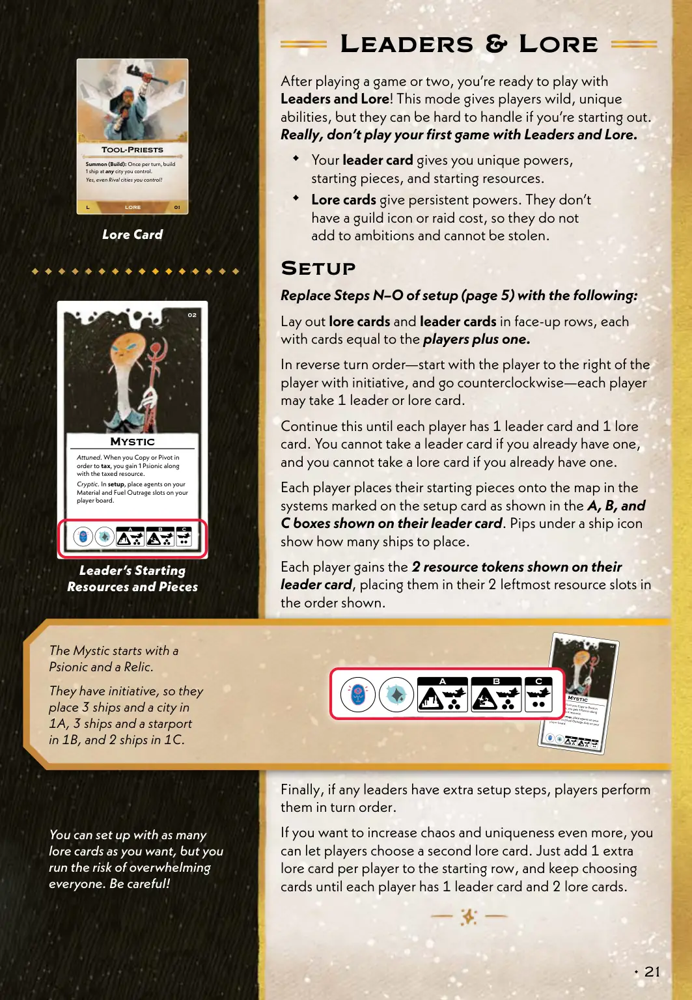
<figcaption>原版规则书 · 第 21 页（点击图片放大）</figcaption>
</figure>

<details class="mt-fold">
<summary>📝 第 21 页 AI 机翻对照（点击展开）</summary>
<div class="mt-body"><p>• 21</p>

<p>神秘主义者起始时拥有1个灵能和1个遗物。</p>

<p>他们拥有先手权，因此他们在1A放置3艘飞船和1个城市，在1B放置3艘飞船和1个太空港，在1C放置2艘飞船。</p>

<p>你可以设置任意多的传说卡牌，但你冒着让所有人都难以承受的风险。小心！</p>

<p>领袖与传说</p>

<p>玩过一两局游戏后，你就可以准备使用领袖与传说模式了！这种模式给予玩家狂野独特的能力，但如果你刚开始玩，可能会难以驾驭。真的，不要在你的第一局游戏中使用领袖与传说。</p>

<p>•</p>

<p>你的领袖卡牌给予你独特的能力、起始棋子和起始资源。</p>

<p>•</p>

<p>传说卡牌提供持久能力。它们没有行会图标或突袭成本，因此它们不会增加野心值，也不能被偷取。</p>

<p>设置</p>

<p>将设置步骤N-O（第5页）替换为以下内容：</p>

<p>将传说卡牌和领袖卡牌正面朝上排成行，每行卡牌数量等于玩家数加一。</p>

<p>按逆回合顺序——从拥有先手权的玩家右侧玩家开始，逆时针方向——每位玩家可以拿取1张领袖卡或传说卡。</p>

<p>继续此过程，直到每位玩家都有1张领袖卡和1张传说卡。如果你已经有领袖卡，就不能再拿领袖卡；如果你已经有传说卡，就不能再拿传说卡。</p>

<p>每位玩家将他们的起始棋子放置在领袖卡上A、B和C框所示标记在地图上的系统中。飞船图标下的点数表示要放置多少艘飞船。</p>

<p>每位玩家获得领袖卡上所示的2个资源指示物，按所示顺序放置在他们玩家板上最左边的2个资源槽中。</p>

<p>最后，如果有领袖有额外的设置步骤，玩家按回合顺序执行它们。</p>

<p>如果你想增加更多的混乱和独特性，可以让玩家选择第二张传说卡。只需在起始行中为每位玩家额外添加1张传说卡，并继续选择卡牌，直到每位玩家都有1张领袖卡和2张传说卡。</p>

<h2>传说</h2>

<p>L</p>

<p>工具祭司</p>

<p>召唤（建造）：每回合一次，在你控制的任何城市建造1艘飞船。</p>

<p>是的，甚至是你控制的敌对城市！</p>

<p>传说卡牌</p>

<p>A</p>

<p>B</p>

<p>C</p>

<p>神秘主义者</p>

<p>未启用。当你为了征税而复制或转向时，除了被征税的资源外，你额外获得1个灵能。</p>

<p>神秘。在设置时，在你的玩家板上将特工放置在你的物质和燃料暴怒槽位中。</p>

<p>领袖的起始资源和棋子</p>

<p>A</p>

<p>B</p>

<p>C</p>

<p>神秘主义者</p>

<p>未启用。当你为了征税而复制或转向时，除了被征税的资源外，你额外获得1个灵能。</p>

<p>神秘。在设置时，在你的玩家板上将特工放置在你的物质和燃料暴怒槽位中。</p>

<p>A</p>

<p>B</p>

<p>C</p></div>
</details>

<figure>
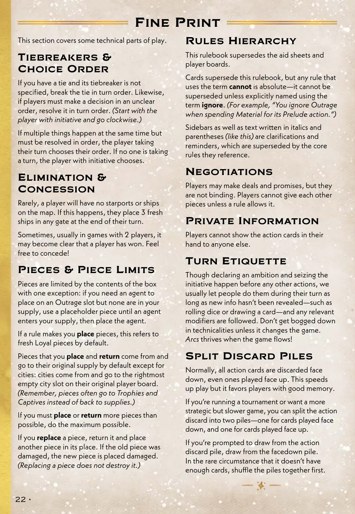
<figcaption>原版规则书 · 第 22 页（点击图片放大）</figcaption>
</figure>

<details class="mt-fold">
<summary>📝 第 22 页 AI 机翻对照（点击展开）</summary>
<div class="mt-body"><p>22 •</p>

<p>细则</p>

<p>规则层级</p>

<p>本规则书优先于辅助卡和玩家版图。</p>

<p>卡牌优先于本规则书，但任何使用"不能"一词的规则都是绝对的——除非明确使用"忽略"一词，否则不能被覆盖。（例如，"在为前奏行动花费材料时，你忽略愤怒。"）</p>

<p>侧边栏以及用斜体和括号（如此处）书写的文本是澄清和提醒，它们可以被其所引用的核心规则覆盖。</p>

<p>谈判</p>

<p>玩家可以达成协议和承诺，但这些不具有约束力。除非规则允许，否则玩家不能互相给予棋子。</p>

<p>私人信息</p>

<p>玩家不能向其他人展示自己手牌中的行动卡。</p>

<p>回合礼仪</p>

<p>尽管宣布抱负和夺取主动权发生在其他任何行动之前，但我们通常允许人们在他们的回合中执行这些操作，只要没有新的信息被揭示——例如掷骰子或摸牌——并且遵循了所有相关修正值。除非它改变了游戏，否则不要陷入技术细节的泥潭。游戏流畅时，星穹弧光才能蓬勃发展！</p>

<p>分开放置的弃牌堆</p>

<p>通常，所有行动牌都是面朝下弃置的，即使是面朝上打出的牌也是如此。这加快了游戏速度，但它有利于记忆力好的玩家。如果你正在举办比赛或想要一个更具战略性但更慢的游戏，你可以将行动弃牌分成两堆——一堆用于面朝下打出的牌，另一堆用于面朝上打出的牌。</p>

<p>如果你被要求从行动弃牌堆中摸牌，从面朝下的那堆摸牌。</p>

<p>在罕见的情况下，如果面朝下的牌堆没有足够的牌，先将两堆牌洗在一起。</p>

<p>本节涵盖了一些游戏的技术部分。</p>

<p>平局决胜与选择顺序</p>

<p>如果你遇到平局且未指定平局决胜规则，按回合顺序打破平局。同样，如果玩家必须在不明确的顺序中做出决定，按回合顺序解决。（从拥有主动权的玩家开始，顺时针进行。）</p>

<p>如果多个事件同时发生但必须按顺序解决，则轮到行动的玩家选择顺序。如果没有人进行回合，则由拥有主动权的玩家选择。</p>

<p>淘汰与认输</p>

<p>偶尔，玩家在版图上可能没有星港或飞船。如果发生这种情况，他们在回合结束时在任何传送门放置3艘新飞船。</p>

<p>有时，尤其是在双人游戏中，可能会明显看出某位玩家已经获胜。随时可以认输！</p>

<p>棋子与棋子限制</p>

<p>棋子数量受盒内内容限制，但有一个例外：如果你需要在愤怒槽位上放置一个特工，但你的供应中没有，请使用一个占位棋子，直到有特工进入你的供应，然后放置该特工。</p>

<p>如果规则要求你放置棋子，默认指的是放置新的忠诚棋子。</p>

<p>你放置和返回的棋子来自并</p>

<p>默认情况下，它们回到其原始供应区，但城市除外：城市来自并回到其原始玩家版图上最右侧的空城市槽位。（记住，棋子通常会被送到奖杯和俘虏区，而不是回到供应区。）</p>

<p>如果你必须放置或归还比可能数量更多的棋子，则尽可能多地做。</p>

<p>如果你要替换一个棋子，请归还它并在其位置放置另一个棋子。如果旧棋子已受损，新棋子也会被放置为受损状态。（替换棋子不会销毁它。）</p></div>
</details>

<figure>
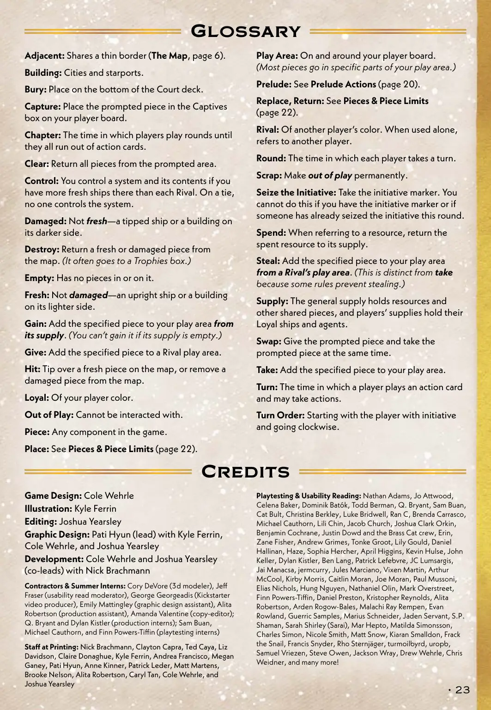
<figcaption>原版规则书 · 第 23 页（点击图片放大）</figcaption>
</figure>

<details class="mt-fold">
<summary>📝 第 23 页 AI 机翻对照（点击展开）</summary>
<div class="mt-body"><p>• 23</p>

<p>词汇表</p>

<p>相邻：共享一条细边（地图，第6页）。</p>

<p>建筑：城市和太空港。</p>

<p>埋入：放置到宫廷牌库的底部。</p>

<p>捕获：将提示的棋子放入你玩家板上的俘虏盒中。</p>

<p>章节：玩家进行回合的时间，直到他们用完行动卡。</p>

<p>清除：从提示区域返回所有棋子。</p>

<p>控制：如果你在一个系统中的新飞船数量比每个对手都多，你就控制该系统及其内容。平局时，无人控制该系统。</p>

<p>受损：不是新的——倾倒的飞船或其深色面上的建筑。</p>

<p>摧毁：从地图上返回一个新或受损的棋子。（它通常会被放入战利品盒中）。</p>

<p>空：内部或上面没有棋子。</p>

<p>新：未受损——直立的飞船或其浅色面上的建筑。</p>

<p>获得：从其供应区将指定棋子添加到你的游戏区域。（如果其供应区为空，则无法获得）。</p>

<p>给予：将指定棋子添加到对手的游戏区域。</p>

<p>击中：将地图上的新棋子翻倒，或从地图上移除受损棋子。</p>

<p>忠诚：属于你的玩家颜色。</p>

<p>不可互动：无法被互动。</p>

<p>棋子：游戏中的任何组件。</p>

<p>放置：见棋子与棋子限制（第22页）。</p>

<p>游戏区域：你的玩家板上及其周围。（大多数棋子会放在你游戏区域的特定部分）。</p>

<p>前奏：见前奏行动（第20页）。</p>

<p>替换、返回：见棋子与棋子限制（第22页）。</p>

<p>对手：属于其他玩家的颜色。单独使用时，指其他玩家。</p>

<p>回合：每个玩家进行一个回合的时间。</p>

<p>报废：永久使其不可互动。</p>

<p>夺取主动权：拿取主动权标记。如果你已有主动权标记，或本回合已有人夺取主动权，则不能这样做。</p>

<p>花费：当指代资源时，将已花费的资源返回到其供应区。</p>

<p>偷取：从对手的游戏区域将指定棋子添加到你的游戏区域。（这与拿取不同，因为某些规则禁止偷取）。</p>

<p>供应：通用供应区持有资源和其他共享棋子，玩家的供应区持有他们的忠诚飞船和特工。</p>

<p>交换：同时给予提示的棋子并拿取提示的棋子。</p>

<p>拿取：将指定棋子添加到你的游戏区域。</p>

<p>回合：玩家打出行动卡并可能采取行动的时间。</p>

<p>回合顺序：从拥有主动权的玩家开始，顺时针进行。</p>

<p>鸣谢</p>

<p>游戏设计：Cole Wehrle</p>

<p>插画：Kyle Ferrin</p>

<p>编辑：Joshua Yearsley</p>

<p>平面设计：Pati Hyun（负责人）与 Kyle Ferrin、Cole Wehrle 和 Joshua Yearsley</p>

<p>开发：Cole Wehrle 和 Joshua Yearsley（联合负责人）与 Nick Brachmann</p>

<p>承包商与暑期实习生：Cory DeVore（3D建模师）、Jeff Fraser（可用性阅读主持人）、George Georgeadis（Kickstarter视频制作人）、Emily Mattingley（平面设计助理）、Alita</p>

<p>Robertson（制作助理），Amanda Valentine（文字编辑）；</p>

<p>Q. Bryant 和 Dylan Kistler（制作实习生）；Sam Buan，</p>

<p>Michael Cauthorn 和 Finn Powers-Tiffin（测试实习生）</p>

<p>印刷人员：Nick Brachmann, Clayton Capra, Ted Caya, Liz</p>

<p>Davidson, Claire Donaghue, Kyle Ferrin, Andrea Francisco, Megan</p>

<p>Ganey, Pati Hyun, Anne Kinner, Patrick Leder, Matt Martens,</p>

<p>Brooke Nelson, Alita Robertson, Caryl Tan, Cole Wehrle, 和</p>

<p>Joshua Yearsley</p>

<p>测试与可用性审阅：Nathan Adams, Jo Attwood,</p>

<p>Celena Baker, Dominik Batók, Todd Berman, Q. Bryant, Sam Buan,</p>

<p>Cat Bult, Christina Berkley, Luke Bridwell, Ran C, Brenda Carrasco,</p>

<p>Michael Cauthorn, Lili Chin, Jacob Church, Joshua Clark Orkin,</p>

<p>Benjamin Cochrane, Justin Dowd 和 Brass Cat 团队, Erin,</p>

<p>Zane Fisher, Andrew Grimes, Tonke Groot, Lily Gould, Daniel</p>

<p>Hallinan, Haze, Sophia Hercher, April Higgins, Kevin Hulse, John</p>

<p>Keller, Dylan Kistler, Ben Lang, Patrick Lefebvre, JC Lumsargis,</p>

<p>Jai Manacsa, jermcurry, Jules Marciano, Vixen Martin, Arthur</p>

<p>McCool, Kirby Morris, Caitlin Moran, Joe Moran, Paul Mussoni,</p>

<p>Elias Nichols, Hung Nguyen, Nathaniel Olin, Mark Overstreet,</p>

<p>Finn Powers-Tiffin, Daniel Preston, Kristopher Reynolds, Alita</p>

<p>Robertson, Arden Rogow-Bales, Malachi Ray Rempen, Evan</p>

<p>Rowland, Guerric Samples, Marius Schneider, Jaden Servant, S.P.</p>

<p>Shaman, Sarah Shirley (Sarai), Mar Hepto, Matilda Simonsson,</p>

<p>Charles Simon, Nicole Smith, Matt Snow, Kiaran Smalldon, Frack</p>

<p>the Snail, Francis Snyder, Rho Sternjäger, turmoilbyrd, uropb,</p>

<p>Samuel Vriezen, Steve Owen, Jackson Wray, Drew Wehrle, Chris</p>

<p>Weidner, 以及更多！</p></div>
</details>

<figure>
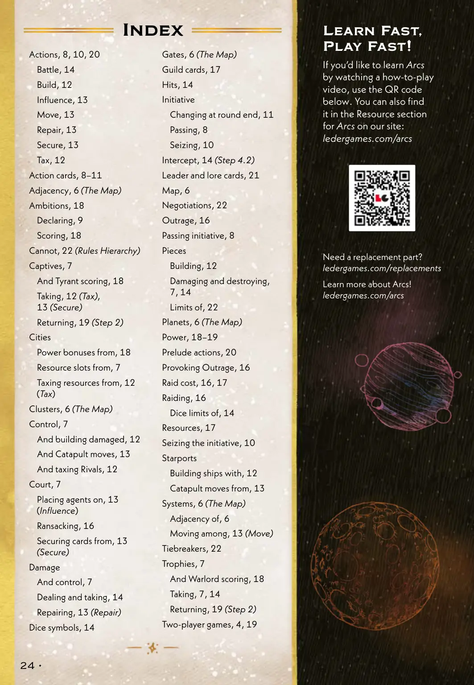
<figcaption>原版规则书 · 第 24 页（点击图片放大）</figcaption>
</figure>

<details class="mt-fold">
<summary>📝 第 24 页 AI 机翻对照（点击展开）</summary>
<div class="mt-body"><p>24 •</p>

<p>索引 </p>

<p>行动，8, 10, 20</p>

<p>战斗，14</p>

<p>建造，12</p>

<p>影响力，13</p>

<p>移动，13</p>

<p>修复，13</p>

<p>确保，13</p>

<p>征税，12</p>

<p>行动卡牌，8–11</p>

<p>相邻性，6（地图）</p>

<p>野心，18</p>

<p>宣布，9</p>

<p>计分，18</p>

<p>不能，22（规则层级）</p>

<p>俘虏，7</p>

<p>与暴君计分，18</p>

<p>夺取，12（征税），13（确保）</p>

<p>归还，19（步骤2）</p>

<p>城市</p>

<p>来自城市的力量加成，18</p>

<p>来自城市的资源槽位，7</p>

<p>从城市征税资源，12（征税）</p>

<p>集群，6（地图）</p>

<p>控制，7</p>

<p>与建造受损，12</p>

<p>与投石机移动，13</p>

<p>与向对手征税，12</p>

<p>宫廷，7</p>

<p>在宫廷放置特工，13（影响力）</p>

<p>掠夺，16</p>

<p>从宫廷确保卡牌，13（确保）</p>

<p>伤害</p>

<p>与控制，7</p>

<p>造成和承受伤害，14</p>

<p>修复，13（修复）</p>

<p>骰子符号，14</p>

<p>星门，6（地图）</p>

<p>公会卡牌，17</p>

<p>命中，14</p>

<p>先手</p>

<p>在轮结束时改变，11</p>

<p>放弃，8</p>

<p>夺取，10</p>

<p>拦截，14（步骤4.2）</p>

<p>领袖和传说卡牌，21</p>

<p>地图，6</p>

<p>谈判，22</p>

<p>愤怒，16</p>

<p>放弃先手，8</p>

<p>棋子</p>

<p>建造棋子，12</p>

<p>损坏和摧毁，7, 14</p>

<p>棋子限制，22</p>

<p>行星，6（地图）</p>

<p>力量，18–19</p>

<p>序幕行动，20</p>

<p>引发愤怒，16</p>

<p>掠夺成本，16, 17</p>

<p>掠夺，14</p>

<p>掠夺的骰子限制，14</p>

<p>资源，17</p>

<p>夺取先手，10</p>

<p>太空港</p>

<p>用太空港建造飞船，12</p>

<p>从太空港进行投石机移动，13</p>

<p>星系，6（地图）</p>

<p>星系的相邻性，6</p>

<p>在星系间移动，13（移动）</p>

<p>平局 breaker，22</p>

<p>战利品，7</p>

<p>与军阀计分，18</p>

<p>夺取，7, 14</p>

<p>归还，19（步骤2）</p>

<p>双人游戏，4, 19</p>

<p>需要替换零件？</p>

<p>ledergames.com/replacements</p>

<p>了解更多关于 Arcs！</p>

<p>ledergames.com/arcs</p>

<p>快速学习，</p>

<p>快速游戏！</p>

<p>如果你想通过观看如何游玩视频来学习 Arcs，</p>

<p>请使用下面的二维码。你也可以在我们的网站上</p>

<p>找到 Arcs 的资源部分：</p>

<p>ledergames.com/arcs</p></div>
</details>
        </div>

        <footer class="source-note">
<p>来源：<a href="https://cdn.shopify.com/s/files/1/0106/0162/7706/files/Arcs_Base_Rulebook.pdf" target="_blank" rel="noopener">Leder Games 官方</a>（2024 Arcs_Base_Rulebook.pdf）· 译文仅供个人学习查阅，规则内容归 Leder Games 及版权方所有 · 原文版權與商标归原出版方。</p>
</footer>
      </article>
    </main>
  </div>

  <button class="to-top" aria-label="返回顶部" data-i18n-aria="backTop">↑</button>
  <script src="../assets/js/i18n.js"></script>
  <script src="../assets/js/main.js"></script>
</body>
</html>
